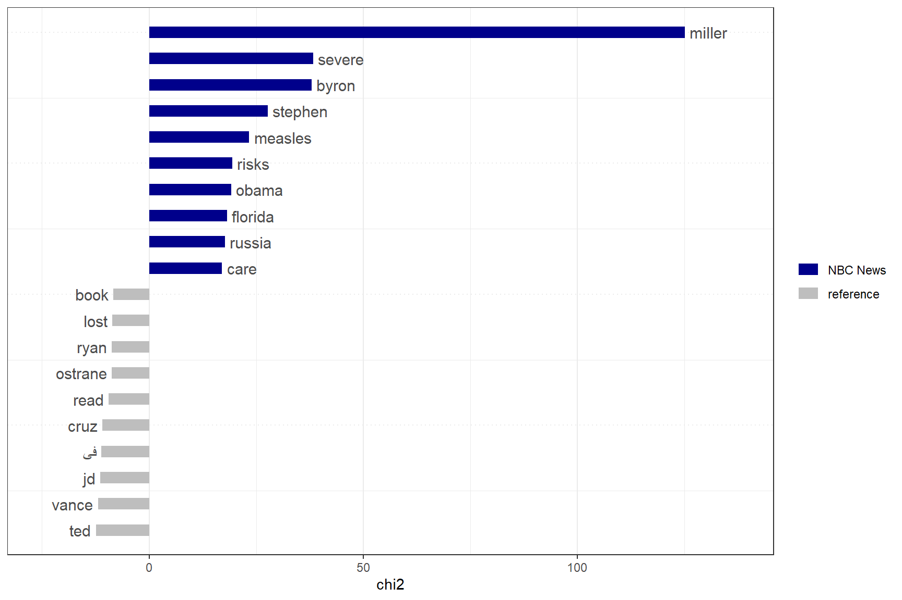
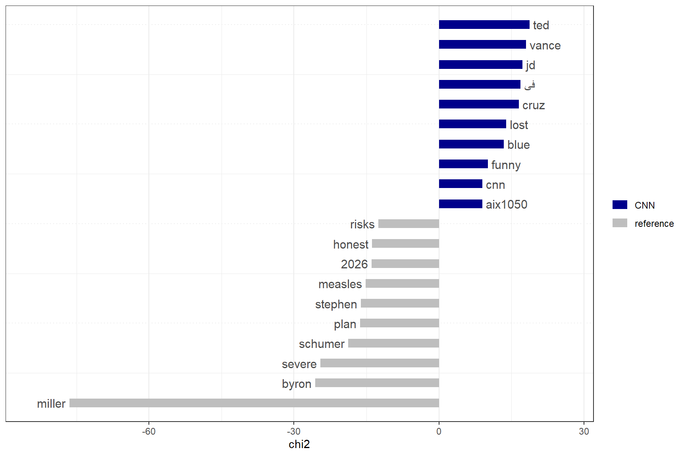
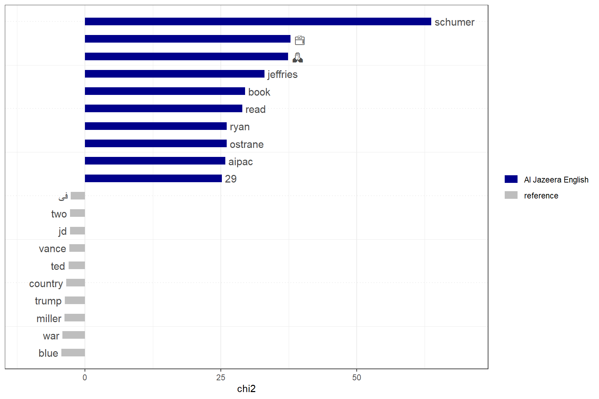
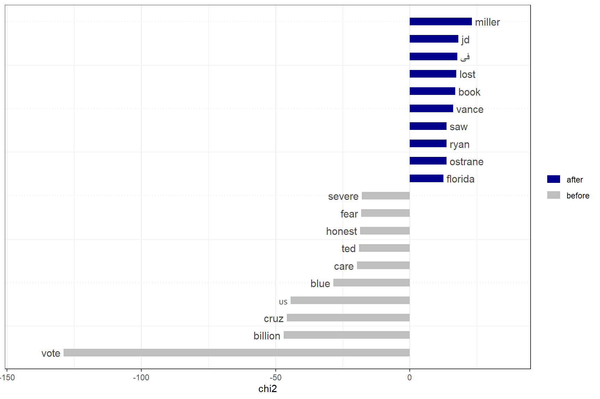

# This render reads local data only. It does not contact YouTube.
if (!requireNamespace("ggplot2", quietly = TRUE)) {
stop("Install ggplot2 before rendering this report.")
}
if (!file.exists(params$recovery_file)) {
stop("Recovery file not found. Set params: recovery_file in the YAML header to its full path.")
}
recovery <- new.env(parent = globalenv())
invisible(load(params$recovery_file, envir = recovery))
missing_outputs <- character()
# Restore aggregate objects stored inside named lists without altering the backup.
for (list_name in c("tables_3a", "keyness_tables")) {
if (exists(list_name, envir = recovery, inherits = FALSE)) {
saved_list <- get(list_name, envir = recovery)
if (is.list(saved_list)) {
for (nm in names(saved_list)) {
if (!exists(nm, envir = recovery, inherits = FALSE)) {
assign(nm, saved_list[[nm]], envir = recovery)
}
}
}
}
}
withheld_tables <- c("authors_by_channel_period", "duplicates_by_channel_period",
"likes_by_channel_period", "reply_by_channel_period")
show_table <- function(object, caption, n = Inf) {
cat("\n\n### ", caption, "\n\n", sep = "")
if (object %in% withheld_tables) {
missing_outputs <<- unique(c(missing_outputs, paste0(object, " (needs metadata repair)")))
cat("Withheld: the recovered breakdown contains 181 comments with missing channel/period metadata. Recompute after repairing the join.\n\n")
return(invisible(NULL))
}
if (!exists(object, envir = recovery, inherits = FALSE)) {
missing_outputs <<- unique(c(missing_outputs, object))
cat("**Not recovered:** `", object, "`. This output needs recovery before submission.\n\n", sep = "")
return(invisible(NULL))
}
x <- as.data.frame(get(object, envir = recovery, inherits = FALSE))
# Do not publish explicit handles that survived tokenization.
if ("feature" %in% names(x)) {
bad_feature <- grepl("@|https?://|www[.]|AIza", as.character(x$feature), ignore.case = TRUE)
x <- x[!is.na(x$feature) & !bad_feature, , drop = FALSE]
n <- min(n, 10)
cat("Display limited to ten features after excluding explicit handles/URLs. Scores are the saved scores, not recomputed estimates.\n\n")
}
if (object %in% c("channels_relevance", "channels_views")) {
cat("Earlier channel counts are not reconciled with the recovered search summaries (93 and 97 unique videos); do not interpret these as a consistent deduplicated sample yet.\n\n")
}
# Defense in depth: never display comment text, author identity, or credentials.
blocked <- grepl("author|comment_id|parent_id|text|context|key|token|credential|user|error_message|error_detail|^title$", names(x), ignore.case = TRUE)
# Aggregate authorship counts are permitted, individual identities are not.
allowed_counts <- c("unique_identifiable_authors", "top_10pct_authors_n",
"comments_from_top_authors", "top_author_share_identified_percent",
"top_author_share_all_comments_percent", "comments_with_author_id",
"comments_missing_author_id", "comments_with_nonblank_text", "missing_or_blank_text",
"distinct_repeated_texts", "comments_in_repeated_text_groups")
blocked[names(x) %in% allowed_counts] <- FALSE
x <- x[, !blocked, drop = FALSE]
if (is.finite(n)) x <- head(x, n)
print(knitr::kable(x, digits = 3, row.names = FALSE))
cat("\n\n")
}
show_plot <- function(object) {
if (exists(object, envir = recovery, inherits = FALSE)) {
print(get(object, envir = recovery, inherits = FALSE))
} else {
missing_outputs <<- unique(c(missing_outputs, object))
cat("Plot not recovered:", object, "\n")
}
}Assignment 7: Code and outputs
Notebook execution: The code below is displayed in full. Original workflow chunks are not re-executed during rendering; the adjacent outputs are retrieved from the saved session. They are previous results, not proof that every displayed chunk ran successfully in this render. Missing results are flagged. This prevents duplicate API collection. Public tables suppress comment-level fields and explicit handles; unreconciled channel-period summaries are withheld. The private recovery file must remain on your computer.
The descriptive answers belong in your separate report. This notebook does not replace the collection logs, manifests, or final publication checks.
Written report and data note · Aggregate downloads
Recovery setup
1. Assignment 7 — Step 2: Collect
## =============================================================================
## Assignment 7 — Step 2: Collect
## =============================================================================
library(tuber)
library(tidyverse)
## Confirm that the API key is loaded without printing it
stopifnot(nzchar(Sys.getenv("YOUTUBE_KEY")))2. Part 2 — Quota: plan before you call
## =============================================================================
## Part 2 — Quota: plan before you call
## =============================================================================
quota_plan <- tribble(
~operation, ~pages, ~search_calls, ~data_units,
"Pre-election: relevance", 2, 2, 0,
"Pre-election: viewCount", 2, 2, 0,
"Post-election: relevance", 2, 2, 0,
"Post-election: viewCount", 2, 2, 0
)
quota_plan
quota_plan |>
summarise(
planned_search_calls = sum(search_calls),
planned_data_units = sum(data_units)
)
## Local usage estimate before collection
quota_before_search <- yt_get_quota_usage()
quota_before_searchshow_table("quota_plan", "Saved output: quota_plan", n = Inf)Saved output: quota_plan
| operation | pages | search_calls | data_units |
|---|---|---|---|
| Pre-election: relevance | 2 | 2 | 0 |
| Pre-election: viewCount | 2 | 2 | 0 |
| Post-election: relevance | 2 | 2 | 0 |
| Post-election: viewCount | 2 | 2 | 0 |
3. Part 3a — Find pre-election videos: relevance
## =============================================================================
## Part 3a — Find pre-election videos: relevance
## =============================================================================
search_term <- "US midterm election"
pre_start <- "2026-09-01T00:00:00Z"
pre_end <- "2026-10-28T00:00:00Z"
## Record when this collection began
pre_search_started_at <- format(Sys.time(), tz = "UTC", usetz = TRUE)
mtelection <- yt_search(
term = search_term,
published_after = pre_start,
published_before = pre_end,
order = "relevance",
max_results = 100
)
glimpse(mtelection)4. Part 3a — Find pre-election videos: view count
## =============================================================================
## Part 3a — Find pre-election videos: view count
## =============================================================================
mtelection_views <- yt_search(
term = search_term,
published_after = pre_start,
published_before = pre_end,
order = "viewCount",
max_results = 100
)
glimpse(mtelection_views)5. Describe the original search results
## =============================================================================
## Describe the original search results
## =============================================================================
search_summary <- tibble(
ordering = c("relevance", "viewCount"),
total_reported = c(
as.numeric(attr(mtelection, "total_results"))[1],
as.numeric(attr(mtelection_views, "total_results"))[1]
),
rows_returned = c(
nrow(mtelection),
nrow(mtelection_views)
),
duplicate_rows = c(
sum(duplicated(mtelection$video_id)),
sum(duplicated(mtelection_views$video_id))
),
unique_videos = c(
n_distinct(mtelection$video_id),
n_distinct(mtelection_views$video_id)
)
)
search_summaryshow_table("search_summary", "Saved output: search_summary", n = Inf)Saved output: search_summary
| ordering | total_reported | rows_returned | duplicate_rows | unique_videos |
|---|---|---|---|---|
| relevance | 1e+06 | 100 | 7 | 93 |
| viewCount | 1e+06 | 100 | 3 | 97 |
6. Keep the original objects and create deduplicated versions
## Keep the original objects and create deduplicated versions
mtelection_unique <- mtelection |>
distinct(video_id, .keep_all = TRUE)
mtelection_views_unique <- mtelection_views |>
distinct(video_id, .keep_all = TRUE)7. Compare the two search orderings
## =============================================================================
## Compare the two search orderings
## =============================================================================
overlap_ids <- intersect(
mtelection_unique$video_id,
mtelection_views_unique$video_id
)
overlap_summary <- tibble(
relevance_unique = nrow(mtelection_unique),
viewCount_unique = nrow(mtelection_views_unique),
in_both = length(overlap_ids),
relevance_only = length(setdiff(
mtelection_unique$video_id,
mtelection_views_unique$video_id
)),
viewCount_only = length(setdiff(
mtelection_views_unique$video_id,
mtelection_unique$video_id
))
)
overlap_summaryshow_table("overlap_summary", "Saved output: overlap_summary", n = Inf)Saved output: overlap_summary
| relevance_unique | viewCount_unique | in_both | relevance_only | viewCount_only |
|---|---|---|---|---|
| 93 | 97 | 23 | 70 | 74 |
8. Channel representation in each search
## =============================================================================
## Channel representation in each search
## =============================================================================
channels_relevance <- mtelection_unique |>
count(channel_id, channel_title, sort = TRUE, name = "n_videos") |>
mutate(percent = round(100 * n_videos / sum(n_videos), 1))
channels_views <- mtelection_views_unique |>
count(channel_id, channel_title, sort = TRUE, name = "n_videos") |>
mutate(percent = round(100 * n_videos / sum(n_videos), 1))
print(
as.data.frame(head(channels_relevance, 15)),
width = 150
)
print(
as.data.frame(head(channels_views, 15)),
width = 150
)show_table("channels_relevance", "Saved output: channels_relevance", n = 15)Saved output: channels_relevance
Earlier channel counts are not reconciled with the recovered search summaries (93 and 97 unique videos); do not interpret these as a consistent deduplicated sample yet.
| channel_id | channel_title | n_videos | percent |
|---|---|---|---|
| UCNye-wNBqNL5ZzHSJj3l8Bg | Al Jazeera English | 31 | 33.3 |
| UCupvZG-5ko_eiXAupbDfxWw | CNN | 11 | 11.8 |
| UCaXkIU1QidjPwiAYu6GcHjg | MS NOW | 5 | 5.4 |
| UCeY0bbntWzzVIaj2z3QigXg | NBC News | 4 | 4.3 |
| UChqUTb7kYRX8-EiaN3XFrSQ | Reuters | 3 | 3.2 |
| UCqnbDFdCpuN8CMEg0VuEBqA | The New York Times | 3 | 3.2 |
| UCLXo7UDZvByw2ixzpQCufnA | Vox | 2 | 2.2 |
| UCQfwfsi5VrQ8yKZ-UWmAEFg | FRANCE 24 English | 2 | 2.2 |
| UCef1-8eOpJgud7szVPlZQAQ | CNN-News18 | 2 | 2.2 |
| UCknLrEdhRCp1aegoMqRaCZg | DW News | 2 | 2.2 |
| UCmYesELO6axBrCuSpf7S9DQ | Mr. Beat | 2 | 2.2 |
| UC-SJ6nODDmufqBzPBwCvYvQ | CBS Mornings | 1 | 1.1 |
| UC16niRr50-MSBwiO3YDb3RA | BBC News | 1 | 1.1 |
| UC3ScyryU9Oy9Wse3a8OAmYQ | FRONTLINE PBS | Official | 1 | 1.1 |
| UC3prwMn9aU2z5Y158ZdGyyA | CRUX | 1 | 1.1 |
show_table("channels_views", "Saved output: channels_views", n = 15)Saved output: channels_views
Earlier channel counts are not reconciled with the recovered search summaries (93 and 97 unique videos); do not interpret these as a consistent deduplicated sample yet.
| channel_id | channel_title | n_videos | percent |
|---|---|---|---|
| UCupvZG-5ko_eiXAupbDfxWw | CNN | 38 | 39.2 |
| UCaXkIU1QidjPwiAYu6GcHjg | MS NOW | 7 | 7.2 |
| UCNye-wNBqNL5ZzHSJj3l8Bg | Al Jazeera English | 4 | 4.1 |
| UC-uhvujip5deVcEtLxnW8qg | TLDR News Global | 3 | 3.1 |
| UCeY0bbntWzzVIaj2z3QigXg | NBC News | 3 | 3.1 |
| UC3XTzVzaHQEd30rQbuvCtTQ | LastWeekTonight | 2 | 2.1 |
| UCFQgi22Ht00CpaOQLtvZx2A | ITV News | 2 | 2.1 |
| UCwWhs_6x42TyRM4Wstoq8HA | The Daily Show | 2 | 2.1 |
| UC16niRr50-MSBwiO3YDb3RA | BBC News | 1 | 1.0 |
| UC3ScyryU9Oy9Wse3a8OAmYQ | FRONTLINE PBS | Official | 1 | 1.0 |
| UC3prwMn9aU2z5Y158ZdGyyA | CRUX | 1 | 1.0 |
| UC6HyKpYWmX4zsy6_bJZIK7A | WXYZ-TV Detroit | Channel 7 | 1 | 1.0 |
| UC6ZFN9Tx6xh-skXCuRHCDpQ | PBS NewsHour | 1 | 1.0 |
| UC83iGbaOhZR8AWNYYNzSNjg | India Global Review | 1 | 1.0 |
| UC8p1vwvWtl6T73JiExfWs1g | CBS News | 1 | 1.0 |
9. Compare planned and recorded quota usage
## =============================================================================
## Compare planned and recorded quota usage
## =============================================================================
quota_after_search <- yt_get_quota_usage()
quota_before_search
quota_after_search10. Part 3b — Select three channels
## =============================================================================
## Part 3b — Select three channels
## =============================================================================
selected_channels <- bind_rows(
mtelection_unique,
mtelection_views_unique
) |>
select(channel_id, channel_title) |>
distinct() |>
filter(channel_title %in% c("NBC News", "CNN", "Al Jazeera English")) |>
mutate(
channel_type = case_when(
channel_title == "NBC News" ~ "US national network",
channel_title == "CNN" ~ "US cable news",
channel_title == "Al Jazeera English" ~ "International broadcaster"
)
)
print(as.data.frame(selected_channels), width = 150)
## Confirm exactly one ID for each selected channel
stopifnot(
nrow(selected_channels) == 3,
n_distinct(selected_channels$channel_id) == 3,
n_distinct(selected_channels$channel_title) == 3
)
nbc_id <- selected_channels |>
filter(channel_title == "NBC News") |>
pull(channel_id)
cnn_id <- selected_channels |>
filter(channel_title == "CNN") |>
pull(channel_id)
aje_id <- selected_channels |>
filter(channel_title == "Al Jazeera English") |>
pull(channel_id)11. Plan the initial channel requests
## =============================================================================
## Plan the initial channel requests
## =============================================================================
channel_quota_plan <- tribble(
~operation, ~requests_planned, ~search_calls, ~data_units,
"NBC News: channel details", 1, 0, 1,
"CNN: channel details", 1, 0, 1,
"Al Jazeera English: details", 1, 0, 1,
"NBC News: uploads lookup allowance", 1, 0, 1,
"CNN: uploads lookup allowance", 1, 0, 1,
"Al Jazeera: uploads lookup allowance", 1, 0, 1,
"NBC News: 500 uploads / 50 per page", 10, 0, 10,
"CNN: 500 uploads / 50 per page", 10, 0, 10,
"Al Jazeera: 500 uploads / 50 per page", 10, 0, 10
)
channel_quota_plan
channel_quota_plan |>
summarise(
planned_search_calls = sum(search_calls),
planned_data_units = sum(data_units)
)
quota_before_channels <- yt_get_quota_usage()
quota_before_channelsshow_table("channel_quota_plan", "Saved output: channel_quota_plan", n = Inf)Saved output: channel_quota_plan
Not recovered: channel_quota_plan. This output needs recovery before submission.
12. Describe the three channels
## =============================================================================
## Describe the three channels
## =============================================================================
nbc_channel <- get_channel_details(channel_ids = nbc_id)
cnn_channel <- get_channel_details(channel_ids = cnn_id)
aje_channel <- get_channel_details(channel_ids = aje_id)
channel_details <- bind_rows(
nbc_channel,
cnn_channel,
aje_channel
)
channel_details |>
select(title, subscriber_count, video_count, view_count)13. Retrieve uploads: initial batch
## =============================================================================
## Retrieve uploads: initial batch
## =============================================================================
nbc_videos <- list_channel_videos(nbc_id, max_results = 500) |>
mutate(date = as.Date(video_published_at)) |>
arrange(desc(date))
cnn_videos <- list_channel_videos(cnn_id, max_results = 500) |>
mutate(date = as.Date(video_published_at)) |>
arrange(desc(date))
aje_videos <- list_channel_videos(aje_id, max_results = 500) |>
mutate(date = as.Date(video_published_at)) |>
arrange(desc(date))14. Check date coverage
## =============================================================================
## Check date coverage
## =============================================================================
uploads_initial <- bind_rows(
nbc_videos |> mutate(selected_channel = "NBC News"),
cnn_videos |> mutate(selected_channel = "CNN"),
aje_videos |> mutate(selected_channel = "Al Jazeera English")
)
coverage_check <- uploads_initial |>
group_by(selected_channel) |>
summarise(
videos_received = n(),
missing_dates = sum(is.na(date)),
earliest_date = if (all(is.na(date))) {
as.Date(NA)
} else {
min(date, na.rm = TRUE)
},
latest_date = if (all(is.na(date))) {
as.Date(NA)
} else {
max(date, na.rm = TRUE)
},
.groups = "drop"
) |>
mutate(
reached_september_1 = earliest_date <= as.Date("2026-09-01")
)
print(as.data.frame(coverage_check), width = 150)
quota_after_channels <- yt_get_quota_usage()
quota_before_channels
quota_after_channels15. Check pagination information and quota output
## =============================================================================
## Check pagination information and quota output
## =============================================================================
## Show metadata names, without printing the video tables
names(attributes(nbc_videos))
names(attributes(cnn_videos))
names(attributes(aje_videos))
## Check for next-page tokens
attr(nbc_videos, "next_page_token")
attr(cnn_videos, "next_page_token")
attr(aje_videos, "next_page_token")
## Inspect quota objects because they displayed no visible output
str(quota_before_channels)
str(quota_after_channels)16. Part 3b — Revised quota plan for older uploads
## =============================================================================
## Part 3b — Revised quota plan for older uploads
## =============================================================================
older_uploads_plan <- tibble(
channel = c("NBC News", "CNN", "Al Jazeera English"),
max_playlist_pages = 200L,
playlist_units = 200L,
lookup_units_allowance = 200L,
maximum_data_units = 400L,
search_calls = 0L
)
print(as.data.frame(older_uploads_plan), width = 150)
quota_before_older <- yt_get_quota_usage()
str(quota_before_older)17. Collect uploads until the September 1 boundary
## =============================================================================
## Collect uploads until the September 1 boundary
## =============================================================================
collect_uploads <- function(channel_id, channel_name,
start_date = as.Date("2026-09-01"),
max_pages = 200L) {
next_token <- NULL
video_pages <- list()
page_logs <- list()
stop_reason <- "page_limit"
for (p in seq_len(max_pages)) {
quota_before <- yt_get_quota_usage()
response <- tryCatch(
list_channel_videos(
channel_id = channel_id,
max_results = 50,
page_token = next_token,
simplify = FALSE
),
error = function(e) e
)
if (inherits(response, "error")) {
stop_reason <- paste("error:", conditionMessage(response))
break
}
quota_after <- yt_get_quota_usage()
units_used <- sum(
quota_after$quota_used[quota_after$bucket == "data"]
) - sum(
quota_before$quota_used[quota_before$bucket == "data"]
)
if (length(response$items) == 0L) {
stop_reason <- "empty_page"
break
}
page_data <- map_dfr(response$items, function(item) {
tibble(
video_id = item$contentDetails$videoId %||%
item$snippet$resourceId$videoId %||% NA_character_,
title = item$snippet$title %||% NA_character_,
video_published_at =
item$contentDetails$videoPublishedAt %||% NA_character_,
channel_id = channel_id,
channel_title = channel_name
)
}) |>
mutate(date = as.Date(video_published_at))
video_pages[[p]] <- page_data
earliest <- if (all(is.na(page_data$date))) {
as.Date(NA)
} else {
min(page_data$date, na.rm = TRUE)
}
## Go strictly before September 1 so that day's uploads are covered
passed_start <- any(page_data$date < start_date, na.rm = TRUE)
page_logs[[p]] <- tibble(
channel_title = channel_name,
page = p,
rows_received = nrow(page_data),
earliest_date = earliest,
missing_dates = sum(is.na(page_data$date)),
data_units = units_used,
passed_start = passed_start,
collected_at = format(Sys.time(), tz = "UTC", usetz = TRUE)
)
message(
channel_name, ": page ", p,
"; earliest date = ", earliest
)
new_token <- response$nextPageToken
if (passed_start) {
stop_reason <- "passed_start_date"
break
}
if (is.null(new_token) || !nzchar(new_token)) {
stop_reason <- "no_next_page"
break
}
if (identical(new_token, next_token)) {
stop_reason <- "repeated_page_token"
break
}
next_token <- new_token
Sys.sleep(1)
}
list(
data = bind_rows(video_pages),
log = bind_rows(page_logs),
status = tibble(
channel_title = channel_name,
stop_reason = stop_reason,
pages_received = length(page_logs)
)
)
}18. Combine uploads and inspect collection status
## =============================================================================
## Combine uploads and inspect collection status
## =============================================================================
# These calls were missing from the original document.
# Run only as part of a deliberate new collection, never while previewing.
nbc_run <- collect_uploads(nbc_id, "NBC News")
cnn_run <- collect_uploads(cnn_id, "CNN")
aje_run <- collect_uploads(aje_id, "Al Jazeera English")
uploads_all <- bind_rows(
nbc_run$data,
cnn_run$data,
aje_run$data
) |>
distinct(channel_id, video_id, .keep_all = TRUE)
uploads_page_log <- bind_rows(
nbc_run$log,
cnn_run$log,
aje_run$log
)
uploads_status <- bind_rows(
nbc_run$status,
cnn_run$status,
aje_run$status
)
print(as.data.frame(uploads_status), width = 150)
uploads_cost <- uploads_page_log |>
group_by(channel_title) |>
summarise(
playlist_pages = n(),
recorded_data_units = sum(data_units),
missing_dates = sum(missing_dates),
.groups = "drop"
)
print(as.data.frame(uploads_cost), width = 150)
quota_after_older <- yt_get_quota_usage()
str(quota_after_older)
print(as.data.frame(uploads_status), width = 150)
print(as.data.frame(uploads_cost), width = 150)show_table("uploads_status", "Saved output: uploads_status", n = Inf)Saved output: uploads_status
Not recovered: uploads_status. This output needs recovery before submission.
show_table("uploads_cost", "Saved output: uploads_cost", n = Inf)Saved output: uploads_cost
Not recovered: uploads_cost. This output needs recovery before submission.
19. Part 3b — Restrict uploads to the pre-election window
## =============================================================================
## Part 3b — Restrict uploads to the pre-election window
## =============================================================================
uploads_pre <- uploads_all |>
filter(
date >= as.Date("2026-09-01"),
date <= as.Date("2026-10-27")
) |>
distinct(channel_id, video_id, .keep_all = TRUE)
uploads_pre |>
count(channel_title, name = "videos_in_window")21. Compare channel uploads with both search lists
## =============================================================================
## Compare channel uploads with both search lists
## =============================================================================
search_ids_pre <- bind_rows(
mtelection_unique,
mtelection_views_unique
) |>
distinct(video_id)
channel_search_comparison <- election_videos_pre |>
mutate(
found_in_search = video_id %in% search_ids_pre$video_id
)
comparison_counts <- channel_search_comparison |>
group_by(channel_id) |>
summarise(
candidates_from_uploads = n(),
also_found_in_search = sum(found_in_search),
missed_by_search = sum(!found_in_search),
.groups = "drop"
)
route_comparison <- selected_channels |>
select(channel_id, channel_title) |>
left_join(comparison_counts, by = "channel_id") |>
mutate(
across(
c(candidates_from_uploads, also_found_in_search, missed_by_search),
~ replace_na(.x, 0L)
)
)
print(as.data.frame(route_comparison), width = 150)
## Inspect the candidate videos absent from both search lists
videos_missed_by_search <- channel_search_comparison |>
filter(!found_in_search) |>
select(channel_title, video_id, date, title)
View(videos_missed_by_search)22. Create the title-review sample
## =============================================================================
## Create the title-review sample
## =============================================================================
set.seed(6302)
title_review <- uploads_pre_checked |>
mutate(
filter_decision = if_else(title_match, "kept", "dropped")
) |>
group_by(channel_title, filter_decision) |>
group_modify(~ slice_sample(.x, n = min(20L, nrow(.x)))) |>
ungroup() |>
select(channel_title, filter_decision, video_id, date, title) |>
arrange(channel_title, filter_decision, date) |>
mutate(review_id = row_number(), .before = 1)23. Review Al Jazeera English titles
## =============================================================================
## Review Al Jazeera English titles
## =============================================================================
aje_review <- title_review |>
filter(channel_title == "Al Jazeera English") |>
select(review_id, filter_decision, title)
write.table(
as.data.frame(aje_review),
file = "",
sep = "\t",
row.names = FALSE,
quote = TRUE
)24. Record Al Jazeera English title-review decisions
## =============================================================================
## Record Al Jazeera English title-review decisions
## =============================================================================
aje_review_coded <- title_review |>
filter(channel_title == "Al Jazeera English") |>
mutate(
relevance_review = case_when(
review_id %in% c(21, 22, 28:33, 38, 40) ~
"Relevant based on title",
review_id %in% c(23:27, 34, 36, 39) ~
"Not relevant: non-US election",
review_id %in% c(35, 37) ~
"Unclear: inspect additional context",
TRUE ~
"No explicit midterm connection in title"
)
)
aje_review_coded |>
count(filter_decision, relevance_review, name = "n_titles")25. Review CNN titles
## =============================================================================
## Review CNN titles
## =============================================================================
cnn_review <- title_review |>
filter(channel_title == "CNN") |>
select(review_id, filter_decision, title)
write.table(
as.data.frame(cnn_review),
file = "",
sep = "\t",
row.names = FALSE,
quote = TRUE
)26. Record CNN title-review decisions
## =============================================================================
## Record CNN title-review decisions
## =============================================================================
cnn_review_coded <- title_review |>
filter(channel_title == "CNN") |>
mutate(
relevance_review = case_when(
review_id %in% c(61, 62, 64:66, 68:78, 80) ~
"Relevant based on title",
review_id == 63 ~
"Not relevant: non-US election",
review_id %in% c(46, 51, 67, 79) ~
"Unclear: inspect additional context",
TRUE ~
"No explicit midterm connection in title"
)
)
cnn_review_coded |>
count(filter_decision, relevance_review, name = "n_titles")27. Review NBC News titles
## =============================================================================
## Review NBC News titles
## =============================================================================
nbc_review <- title_review |>
filter(channel_title == "NBC News") |>
select(review_id, filter_decision, title)
write.table(
as.data.frame(nbc_review),
file = "",
sep = "\t",
row.names = FALSE,
quote = TRUE
)28. Record NBC News title-review decisions
## =============================================================================
## Record NBC News title-review decisions
## =============================================================================
nbc_review_coded <- title_review |>
filter(channel_title == "NBC News") |>
mutate(
relevance_review = case_when(
review_id %in% c(81, 101:103, 105, 107:109, 111:116, 118:119) ~
"Relevant based on title",
review_id %in% c(98, 99, 104, 106, 110, 120) ~
"Unclear: inspect additional context",
review_id == 117 ~
"No explicit 2026 connection: title references 2024",
TRUE ~
"No explicit midterm connection in title"
)
)
## Combine the reviews for all three channels
title_review_coded <- bind_rows(
aje_review_coded,
cnn_review_coded,
nbc_review_coded
)
review_summary <- title_review_coded |>
count(
channel_title,
filter_decision,
relevance_review,
name = "n_titles"
)
print(as.data.frame(review_summary), width = 150)29. Revise the candidate title filter after manual review
## =============================================================================
## Revise the candidate title filter after manual review
## =============================================================================
title_pattern_original <- title_pattern
title_pattern_revised <- paste(
title_pattern_original,
"congress",
"governor",
"gubernatorial",
"campaign",
sep = "|"
)
## Record the revision and its reason
filter_revision_note <- tibble(
original_pattern = title_pattern_original,
revised_pattern = title_pattern_revised,
reason = paste(
"Title review identified missed congressional campaigning",
"and possible gubernatorial coverage.",
"Expanded terms identify candidates; selected videos still",
"require manual confirmation of US 2026 election relevance."
)
)
uploads_pre_revised <- uploads_pre_checked |>
mutate(
title_match_original = title_match,
title_match_revised = str_detect(
coalesce(title, ""),
regex(title_pattern_revised, ignore_case = TRUE)
)
)
filter_revision_summary <- uploads_pre_revised |>
group_by(channel_title) |>
summarise(
originally_kept = sum(title_match_original),
revised_kept = sum(title_match_revised),
newly_added = sum(title_match_revised & !title_match_original),
.groups = "drop"
)
print(as.data.frame(filter_revision_summary), width = 150)
## Preserve the original candidate table
election_videos_pre_revised <- uploads_pre_revised |>
filter(title_match_revised) |>
distinct(channel_id, video_id, .keep_all = TRUE)show_table("filter_revision_summary", "Saved output: filter_revision_summary", n = Inf)Saved output: filter_revision_summary
Not recovered: filter_revision_summary. This output needs recovery before submission.
30. Compare revised candidates with the original search results
## =============================================================================
## Compare revised candidates with the original search results
## =============================================================================
route_comparison_revised <- uploads_pre_revised |>
mutate(
found_in_search = video_id %in% search_ids_pre$video_id
) |>
group_by(channel_title) |>
summarise(
candidates_from_uploads = sum(title_match_revised),
also_found_in_search =
sum(title_match_revised & found_in_search),
missed_by_search =
sum(title_match_revised & !found_in_search),
.groups = "drop"
)
print(as.data.frame(route_comparison_revised), width = 150)show_table("route_comparison_revised", "Saved output: route_comparison_revised", n = Inf)Saved output: route_comparison_revised
Not recovered: route_comparison_revised. This output needs recovery before submission.
31. Part 5 — Shortlist videos for comment collection
## =============================================================================
## Part 5 — Shortlist videos for comment collection
## =============================================================================
video_shortlist_pre <- election_videos_pre_revised |>
filter(
str_detect(
coalesce(title, ""),
regex("midterm", ignore_case = TRUE)
)
) |>
group_by(channel_title) |>
arrange(desc(date), video_id, .by_group = TRUE) |>
slice_head(n = 6) |>
ungroup() |>
select(channel_title, video_id, date, title) |>
mutate(shortlist_id = row_number(), .before = 1)
write.table(
as.data.frame(video_shortlist_pre),
file = "",
sep = "\t",
row.names = FALSE,
quote = TRUE
)32. Part 5 — Select three pre-election videos per channel
## =============================================================================
## Part 5 — Select three pre-election videos per channel
## =============================================================================
selected_videos_pre <- video_shortlist_pre |>
group_by(channel_title) |>
arrange(desc(date), video_id, .by_group = TRUE) |>
slice_head(n = 3) |>
ungroup() |>
distinct(video_id, .keep_all = TRUE)
## Verify three videos per channel
selected_videos_pre |>
count(channel_title, name = "selected_videos")
stopifnot(
nrow(selected_videos_pre) == 9,
all(table(selected_videos_pre$channel_title) == 3)
)
selection_rule_pre <- paste(
"Three videos per channel selected from revised title-filter candidates",
"whose titles also contain 'midterm'.",
"Ordered by publication date descending, then video ID ascending;",
"the first three per channel were selected.",
"Publication window: 2026-09-01 through 2026-10-27.",
"Selection did not depend on comment availability."
)33. Plan video-statistics quota before the request
## =============================================================================
## Plan video-statistics quota before the request
## =============================================================================
stats_quota_plan <- tibble(
operation = "Statistics for nine selected pre-election videos",
video_ids = nrow(selected_videos_pre),
requests_planned = ceiling(nrow(selected_videos_pre) / 50),
search_calls = 0L,
data_units = ceiling(nrow(selected_videos_pre) / 50)
)
print(as.data.frame(stats_quota_plan), width = 150)
quota_before_pre_stats <- yt_get_quota_usage()show_table("stats_quota_plan", "Saved output: stats_quota_plan", n = Inf)Saved output: stats_quota_plan
Not recovered: stats_quota_plan. This output needs recovery before submission.
34. Retrieve reported video statistics
## =============================================================================
## Retrieve reported video statistics
## =============================================================================
stats_pre_collected_at <- format(
Sys.time(), tz = "UTC", usetz = TRUE
)
stats_pre <- get_video_stats(
selected_videos_pre$video_id
)
## Confirm one statistics row per returned video
stopifnot(!anyDuplicated(stats_pre$video_id))
video_info_pre <- selected_videos_pre |>
left_join(
stats_pre,
by = "video_id",
relationship = "many-to-one"
)
quota_after_pre_stats <- yt_get_quota_usage()
## Display reported counts
video_counts_pre <- video_info_pre |>
select(
shortlist_id,
channel_title,
video_id,
date,
view_count,
comment_count
)
print(as.data.frame(video_counts_pre), width = 150)35. Part 5c — Plan comment collection
## =============================================================================
## Part 5c — Plan comment collection
## =============================================================================
comment_quota_plan <- selected_videos_pre |>
select(channel_title, video_id) |>
mutate(
maximum_comments = 300L,
planned_thread_pages = 3L,
reply_page_allowance = 30L,
planned_data_units = planned_thread_pages + reply_page_allowance,
search_calls = 0L
)
print(as.data.frame(comment_quota_plan), width = 150)
comment_quota_plan |>
summarise(
planned_data_units = sum(planned_data_units),
search_calls = sum(search_calls)
)
quota_before_pre_comments <- yt_get_quota_usage()
str(quota_before_pre_comments)show_table("comment_quota_plan", "Saved output: comment_quota_plan", n = Inf)Saved output: comment_quota_plan
Not recovered: comment_quota_plan. This output needs recovery before submission.
36. Collect comments with a status log
## =============================================================================
## Collect comments with a status log
## =============================================================================
collect_comments <- function(video_id, n_max = 300) {
status <- "ok"
started_at <- format(Sys.time(), tz = "UTC", usetz = TRUE)
quota_before <- yt_get_quota_usage()
out <- tryCatch(
withCallingHandlers(
get_all_comments(video_id, max_results = n_max),
tuber_comments_disabled = function(w) {
status <<- "disabled"
invokeRestart("muffleWarning")
},
tuber_no_comments = function(w) {
if (status == "ok") status <<- "none"
invokeRestart("muffleWarning")
}
),
error = function(e) e
)
quota_after <- yt_get_quota_usage()
units_used <- sum(
quota_after$quota_used[quota_after$bucket == "data"]
) - sum(
quota_before$quota_used[quota_before$bucket == "data"]
)
finished_at <- format(Sys.time(), tz = "UTC", usetz = TRUE)
Sys.sleep(1)
if (inherits(out, "error")) {
error_message <- conditionMessage(out)
## Ensure the key cannot enter a saved error message
key <- Sys.getenv("YOUTUBE_KEY")
if (nzchar(key)) {
error_message <- gsub(
key, "<REDACTED>", error_message, fixed = TRUE
)
}
return(list(
data = NULL,
log = tibble(
video_id,
status = "error",
n_returned = 0L,
n_unique = 0L,
duplicates_removed = 0L,
data_units = units_used,
started_at,
finished_at,
message = error_message
)
))
}
out <- as_tibble(out)
n_returned <- nrow(out)
if (n_returned > 0L) {
out <- out |>
distinct(comment_id, .keep_all = TRUE)
stopifnot(nrow(out) <= n_max)
} else if (status == "ok") {
status <- "none"
}
list(
data = out,
log = tibble(
video_id,
status,
n_returned,
n_unique = nrow(out),
duplicates_removed = n_returned - nrow(out),
data_units = units_used,
started_at,
finished_at,
message = NA_character_
)
)
}37. Collect up to 300 comments for each selected video
## =============================================================================
## Collect up to 300 comments for each selected video
## =============================================================================
targets_pre <- selected_videos_pre$video_id
pre_comments_started_at <- format(
Sys.time(), tz = "UTC", usetz = TRUE
)
runs_pre <- map(
targets_pre,
collect_comments,
n_max = 300,
.progress = TRUE
)
pre_comments_finished_at <- format(
Sys.time(), tz = "UTC", usetz = TRUE
)
quota_after_pre_comments <- yt_get_quota_usage()38. Collection log and reported-versus-received comparison
## =============================================================================
## Collection log and reported-versus-received comparison
## =============================================================================
yt_log_pre <- map(runs_pre, "log") |>
list_rbind()
comment_comparison_pre <- video_info_pre |>
select(channel_title, video_id, title, comment_count) |>
rename(comments_reported = comment_count) |>
left_join(
yt_log_pre,
by = "video_id",
relationship = "one-to-one"
)
comment_comparison_pre |>
select(
channel_title,
video_id,
comments_reported,
status,
n_returned,
n_unique,
duplicates_removed,
data_units
) |>
as.data.frame() |>
print(width = 150)
yt_log_pre |>
count(status)
str(quota_after_pre_comments)39. Deduplicate comments and attach video information
## =============================================================================
## Deduplicate comments and attach video information
## =============================================================================
yt_comments_pre_raw <- map(runs_pre, "data") |>
list_rbind()
if (nrow(yt_comments_pre_raw) > 0L) {
yt_comments_pre <- yt_comments_pre_raw |>
distinct(comment_id, .keep_all = TRUE) |>
select(-any_of(c(
"channel_title", "video_title", "video_date", "video_period"
))) |>
left_join(
selected_videos_pre |>
distinct(video_id, .keep_all = TRUE) |>
transmute(
video_id,
channel_title,
video_title = title,
video_date = date,
video_period = "before"
),
by = "video_id",
relationship = "many-to-one"
)
stopifnot(!anyDuplicated(yt_comments_pre$comment_id))
yt_comments_pre |>
count(channel_title, name = "comments_received")
} else {
message("No comments returned. Inspect yt_log_pre before continuing.")
}40. Part 5d — Save the pre-election-video collection
## =============================================================================
## Part 5d — Save the pre-election-video collection
## =============================================================================
stopifnot(
exists("yt_comments_pre"),
nrow(yt_comments_pre) == sum(yt_log_pre$n_unique),
!anyDuplicated(yt_comments_pre$comment_id)
)
## Raw data stay inside the gitignored data/ folder
dir_pre <- "data/youtube/pre"
dir.create(dir_pre, recursive = TRUE, showWarnings = FALSE)
write_rds(
yt_comments_pre,
file.path(dir_pre, "comments_pre.rds")
)
write_rds(
video_info_pre,
file.path(dir_pre, "video_info_pre.rds")
)
## Preserve collection objects for troubleshooting without new API requests
write_rds(
runs_pre,
file.path(dir_pre, "collection_runs_pre.rds")
)41. Save report outputs: logs and aggregate counts
## =============================================================================
## Save report outputs: logs and aggregate counts
## =============================================================================
dir_report_pre <- "outputs/youtube/pre"
dir.create(dir_report_pre, recursive = TRUE, showWarnings = FALSE)
write_csv(
yt_log_pre,
file.path(dir_report_pre, "collection_log_pre.csv")
)
write_csv(
comment_comparison_pre |>
select(
channel_title,
video_id,
comments_reported,
status,
n_returned,
n_unique,
duplicates_removed,
data_units,
started_at,
finished_at
),
file.path(dir_report_pre, "comment_counts_pre.csv")
)42. Manifest: collection methods, timing, and retention
## =============================================================================
## Manifest: collection methods, timing, and retention
## =============================================================================
collection_date_pre <- min(
as.Date(substr(pre_search_started_at, 1, 10)),
as.Date(substr(pre_comments_started_at, 1, 10))
)
delete_by_pre <- collection_date_pre + 30
manifest_pre <- list(
source = "YouTube Data API v3 via tuber",
software = list(
R = R.version.string,
tuber = as.character(packageVersion("tuber")),
httr2 = as.character(packageVersion("httr2"))
),
credential = "API key; public data",
timing = list(
search_started_at = pre_search_started_at,
comments_started_at = pre_comments_started_at,
comments_finished_at = pre_comments_finished_at,
statistics_collected_at = stats_pre_collected_at,
limitation = paste(
"Videos were published before Election Day,",
"but collection occurred after Election Day.",
"Comments may have been posted before or after Election Day;",
"this is not a pre-election collection snapshot."
)
),
search = list(
term = search_term,
published_after = pre_start,
published_before = pre_end,
orderings = c("relevance", "viewCount"),
requested_per_ordering = 100L,
results = as.data.frame(search_summary)
),
channels = as.data.frame(selected_channels),
channel_collection = list(
method = "list_channel_videos; uploads playlist pagination",
page_size = 50L,
stopping_rule = "Stop after encountering a video before 2026-09-01",
traversal_costs = as.data.frame(uploads_cost),
initial_collection = paste(
"An initial 500-upload batch per channel was collected.",
"Pagination was subsequently restarted because those tables",
"did not retain continuation tokens.",
"Earlier channel-details and initial-upload requests used 36 units."
)
),
title_filter = list(
original = title_pattern_original,
revised = title_pattern_revised,
case_sensitive = FALSE,
review = paste(
"20 kept and 20 dropped titles reviewed per channel.",
"Review identified non-US elections and missed campaign coverage.",
"Candidate matching does not establish substantive relevance."
)
),
video_selection = list(
rule = selection_rule_pre,
selected_videos = as.data.frame(
selected_videos_pre |>
select(channel_title, video_id, date, title)
)
),
comments = list(
function_used = "get_all_comments via collect_comments",
maximum_per_video = 300L,
includes_replies = TRUE,
ordering = "Package defaults; no order argument supplied",
duplicate_rule = "One row per comment_id",
join_rule = "many-to-one join to unique video IDs",
videos_attempted = nrow(yt_log_pre),
unique_comments_received = nrow(yt_comments_pre),
status_counts = as.data.frame(count(yt_log_pre, status))
),
quota = list(
planned_comments = as.data.frame(comment_quota_plan),
actual_comment_units = sum(yt_log_pre$data_units),
session_usage_after_comments =
as.data.frame(quota_after_pre_comments)
),
retention = paste(
"Delete collected raw API data by delete_by.",
"Retain code, permitted collection logs, manifests,",
"and aggregate report outputs."
),
delete_by = as.character(delete_by_pre)
)
## Check the exact search term
stopifnot(
identical(manifest_pre$search$term, "US midterm election")
)
## Check that the API key is absent before saving
manifest_json <- jsonlite::toJSON(
manifest_pre,
auto_unbox = TRUE,
pretty = TRUE,
na = "null"
)
key <- Sys.getenv("YOUTUBE_KEY")
if (nzchar(key)) {
stopifnot(!grepl(key, manifest_json, fixed = TRUE))
}
jsonlite::write_json(
manifest_pre,
file.path(dir_report_pre, "manifest_pre.json"),
auto_unbox = TRUE,
pretty = TRUE,
na = "null"
)
print(delete_by_pre)43. Verify saved files
## =============================================================================
## Verify saved files
## =============================================================================
files_to_check <- c(
file.path(dir_pre, "comments_pre.rds"),
file.path(dir_pre, "video_info_pre.rds"),
file.path(dir_pre, "collection_runs_pre.rds"),
file.path(dir_report_pre, "collection_log_pre.csv"),
file.path(dir_report_pre, "comment_counts_pre.csv"),
file.path(dir_report_pre, "manifest_pre.json")
)
print(
data.frame(
file = files_to_check,
saved = file.exists(files_to_check)
),
row.names = FALSE
)44. Part 2e — Post-election search plan
## =============================================================================
## Part 2e — Post-election search plan
## =============================================================================
post_start <- "2026-11-04T00:00:00Z"
post_search_time <- Sys.time()
post_end <- format(
post_search_time,
"%Y-%m-%dT%H:%M:%SZ",
tz = "UTC"
)
post_search_started_at <- format(
post_search_time,
tz = "UTC",
usetz = TRUE
)
quota_plan_post_search <- tribble(
~operation, ~pages, ~search_calls, ~data_units,
"Post-election: relevance", 2, 2, 0,
"Post-election: viewCount", 2, 2, 0
)
print(as.data.frame(quota_plan_post_search), width = 150)
post_start
post_end
quota_before_post_search <- yt_get_quota_usage()show_table("quota_plan_post_search", "Saved output: quota_plan_post_search", n = Inf)Saved output: quota_plan_post_search
Not recovered: quota_plan_post_search. This output needs recovery before submission.
45. Search post-election videos using both orderings
## =============================================================================
## Search post-election videos using both orderings
## =============================================================================
mtelection_post <- yt_search(
term = search_term,
published_after = post_start,
published_before = post_end,
order = "relevance",
max_results = 100
)
mtelection_post_views <- yt_search(
term = search_term,
published_after = post_start,
published_before = post_end,
order = "viewCount",
max_results = 100
)
quota_after_post_search <- yt_get_quota_usage()46. Describe the original post-election search results
## =============================================================================
## Describe the original post-election search results
## =============================================================================
search_summary_post <- tibble(
ordering = c("relevance", "viewCount"),
total_reported = c(
as.numeric(attr(mtelection_post, "total_results"))[1],
as.numeric(attr(mtelection_post_views, "total_results"))[1]
),
rows_returned = c(
nrow(mtelection_post),
nrow(mtelection_post_views)
),
duplicate_rows = c(
sum(duplicated(mtelection_post$video_id)),
sum(duplicated(mtelection_post_views$video_id))
),
unique_videos = c(
n_distinct(mtelection_post$video_id),
n_distinct(mtelection_post_views$video_id)
)
)
print(as.data.frame(search_summary_post), width = 150)
## Keep one row per video in each list
mtelection_post_unique <- mtelection_post |>
distinct(video_id, .keep_all = TRUE)
mtelection_post_views_unique <- mtelection_post_views |>
distinct(video_id, .keep_all = TRUE)47. Describe the original post-election search results
## =============================================================================
## Describe the original post-election search results
## =============================================================================
search_summary_post <- tibble(
ordering = c("relevance", "viewCount"),
total_reported = c(
as.numeric(attr(mtelection_post, "total_results"))[1],
as.numeric(attr(mtelection_post_views, "total_results"))[1]
),
rows_returned = c(
nrow(mtelection_post),
nrow(mtelection_post_views)
),
duplicate_rows = c(
sum(duplicated(mtelection_post$video_id)),
sum(duplicated(mtelection_post_views$video_id))
),
unique_videos = c(
n_distinct(mtelection_post$video_id),
n_distinct(mtelection_post_views$video_id)
)
)
print(as.data.frame(search_summary_post), width = 150)
## Keep one row per video in each list
mtelection_post_unique <- mtelection_post |>
distinct(video_id, .keep_all = TRUE)
mtelection_post_views_unique <- mtelection_post_views |>
distinct(video_id, .keep_all = TRUE)show_table("search_summary_post", "Saved output: search_summary_post", n = Inf)Saved output: search_summary_post
Not recovered: search_summary_post. This output needs recovery before submission.
48. Compare post-election search orderings
## =============================================================================
## Compare post-election search orderings
## =============================================================================
overlap_summary_post <- tibble(
relevance_unique = nrow(mtelection_post_unique),
viewCount_unique = nrow(mtelection_post_views_unique),
in_both = length(intersect(
mtelection_post_unique$video_id,
mtelection_post_views_unique$video_id
)),
relevance_only = length(setdiff(
mtelection_post_unique$video_id,
mtelection_post_views_unique$video_id
)),
viewCount_only = length(setdiff(
mtelection_post_views_unique$video_id,
mtelection_post_unique$video_id
))
)
print(as.data.frame(overlap_summary_post), width = 150)
channels_post_relevance <- mtelection_post_unique |>
count(channel_id, channel_title, sort = TRUE, name = "n_videos") |>
mutate(percent = round(100 * n_videos / sum(n_videos), 1))
channels_post_views <- mtelection_post_views_unique |>
count(channel_id, channel_title, sort = TRUE, name = "n_videos") |>
mutate(percent = round(100 * n_videos / sum(n_videos), 1))
print(
as.data.frame(head(channels_post_relevance, 15)),
width = 150
)
print(
as.data.frame(head(channels_post_views, 15)),
width = 150
)
## Combined search IDs for later comparison
search_ids_post <- bind_rows(
mtelection_post_unique,
mtelection_post_views_unique
) |>
distinct(video_id)
str(quota_after_post_search)show_table("overlap_summary_post", "Saved output: overlap_summary_post", n = Inf)Saved output: overlap_summary_post
Not recovered: overlap_summary_post. This output needs recovery before submission.
49. Part 2e — Identify post-election videos in collected uploads
## =============================================================================
## Part 2e — Identify post-election videos in collected uploads
## =============================================================================
uploads_post <- uploads_all |>
mutate(
published_time = as.POSIXct(
video_published_at,
format = "%Y-%m-%dT%H:%M:%SZ",
tz = "UTC"
)
) |>
filter(
published_time >= as.POSIXct(
post_start,
format = "%Y-%m-%dT%H:%M:%SZ",
tz = "UTC"
),
published_time < as.POSIXct(
post_end,
format = "%Y-%m-%dT%H:%M:%SZ",
tz = "UTC"
)
) |>
distinct(channel_id, video_id, .keep_all = TRUE) |>
mutate(
title_match_revised = str_detect(
coalesce(title, ""),
regex(title_pattern_revised, ignore_case = TRUE)
)
)
## Apply the same revised candidate filter
election_videos_post <- uploads_post |>
filter(title_match_revised)
post_candidate_counts <- uploads_post |>
group_by(channel_title) |>
summarise(
uploads_in_window = n(),
candidate_titles = sum(title_match_revised),
.groups = "drop"
)
print(as.data.frame(post_candidate_counts), width = 150)50. Shortlist post-election videos for manual review
## =============================================================================
## Shortlist post-election videos for manual review
## =============================================================================
video_shortlist_post <- election_videos_post |>
filter(
str_detect(
coalesce(title, ""),
regex("midterm", ignore_case = TRUE)
)
) |>
group_by(channel_title) |>
arrange(desc(date), video_id, .by_group = TRUE) |>
slice_head(n = 6) |>
ungroup() |>
select(channel_title, video_id, date, title) |>
mutate(shortlist_id = row_number(), .before = 1)
write.table(
as.data.frame(video_shortlist_post),
file = "",
sep = "\t",
row.names = FALSE,
quote = TRUE
)51. Part 2e — Select three post-election videos per channel
## =============================================================================
## Part 2e — Select three post-election videos per channel
## =============================================================================
selected_videos_post <- video_shortlist_post |>
group_by(channel_title) |>
arrange(desc(date), video_id, .by_group = TRUE) |>
slice_head(n = 3) |>
ungroup() |>
distinct(video_id, .keep_all = TRUE)
selected_videos_post |>
count(channel_title, name = "selected_videos")
stopifnot(
nrow(selected_videos_post) == 9,
all(table(selected_videos_post$channel_title) == 3)
)
selection_rule_post <- paste(
"Three videos per channel selected from revised title-filter candidates",
"whose titles also contain 'midterm'.",
"Ordered by publication date descending, then video ID ascending;",
"the first three per channel were selected.",
"Publication window begins 2026-11-04 and ends at the recorded search cutoff.",
"Selection uses the earlier uploads collection and does not depend",
"on comment availability."
)52. Plan post-election video-statistics quota
## =============================================================================
## Plan post-election video-statistics quota
## =============================================================================
stats_quota_plan_post <- tibble(
operation = "Statistics for nine selected post-election videos",
video_ids = nrow(selected_videos_post),
requests_planned = ceiling(nrow(selected_videos_post) / 50),
search_calls = 0L,
data_units = ceiling(nrow(selected_videos_post) / 50)
)
print(as.data.frame(stats_quota_plan_post), width = 150)
quota_before_post_stats <- yt_get_quota_usage()show_table("stats_quota_plan_post", "Saved output: stats_quota_plan_post", n = Inf)Saved output: stats_quota_plan_post
Not recovered: stats_quota_plan_post. This output needs recovery before submission.
53. Retrieve post-election video statistics
## =============================================================================
## Retrieve post-election video statistics
## =============================================================================
stats_post_collected_at <- format(
Sys.time(), tz = "UTC", usetz = TRUE
)
stats_post <- get_video_stats(
selected_videos_post$video_id
)
stopifnot(!anyDuplicated(stats_post$video_id))
video_info_post <- selected_videos_post |>
left_join(
stats_post,
by = "video_id",
relationship = "many-to-one"
)
quota_after_post_stats <- yt_get_quota_usage()
video_counts_post <- video_info_post |>
select(
shortlist_id,
channel_title,
video_id,
date,
view_count,
comment_count
)
print(as.data.frame(video_counts_post), width = 150)54. Part 2e — Plan post-election comment collection
## =============================================================================
## Part 2e — Plan post-election comment collection
## =============================================================================
stopifnot(exists("collect_comments"))
comment_quota_plan_post <- selected_videos_post |>
select(channel_title, video_id) |>
mutate(
maximum_comments = 300L,
planned_thread_pages = 3L,
reply_page_allowance = 30L,
planned_data_units = planned_thread_pages + reply_page_allowance,
search_calls = 0L
)
print(as.data.frame(comment_quota_plan_post), width = 150)
quota_before_post_comments <- yt_get_quota_usage()
str(quota_before_post_comments)show_table("comment_quota_plan_post", "Saved output: comment_quota_plan_post", n = Inf)Saved output: comment_quota_plan_post
Not recovered: comment_quota_plan_post. This output needs recovery before submission.
55. Collect up to 300 comments per post-election video
## =============================================================================
## Collect up to 300 comments per post-election video
## =============================================================================
targets_post <- selected_videos_post$video_id
post_comments_started_at <- format(
Sys.time(), tz = "UTC", usetz = TRUE
)
runs_post <- map(
targets_post,
collect_comments,
n_max = 300,
.progress = TRUE
)
post_comments_finished_at <- format(
Sys.time(), tz = "UTC", usetz = TRUE
)
quota_after_post_comments <- yt_get_quota_usage()show_table("quota_after_post_comments", "Saved output: quota_after_post_comments", n = Inf)Saved output: quota_after_post_comments
Not recovered: quota_after_post_comments. This output needs recovery before submission.
56. Post-election collection log and count comparison
## =============================================================================
## Post-election collection log and count comparison
## =============================================================================
yt_log_post <- map(runs_post, "log") |>
list_rbind()
comment_comparison_post <- video_info_post |>
select(channel_title, video_id, title, comment_count) |>
rename(comments_reported = comment_count) |>
left_join(
yt_log_post,
by = "video_id",
relationship = "one-to-one"
)
comment_comparison_post |>
select(
channel_title,
video_id,
comments_reported,
status,
n_returned,
n_unique,
duplicates_removed,
data_units
) |>
as.data.frame() |>
print(width = 150)
yt_log_post |>
count(status) |>
as.data.frame() |>
print()
str(quota_after_post_comments)57. Combine post-election comments without duplicating rows
## =============================================================================
## Combine post-election comments without duplicating rows
## =============================================================================
yt_comments_post_raw <- map(runs_post, "data") |>
list_rbind()
if (nrow(yt_comments_post_raw) > 0L) {
yt_comments_post <- yt_comments_post_raw |>
distinct(comment_id, .keep_all = TRUE) |>
select(-any_of(c(
"channel_title", "video_title", "video_date", "video_period"
))) |>
left_join(
selected_videos_post |>
distinct(video_id, .keep_all = TRUE) |>
transmute(
video_id,
channel_title,
video_title = title,
video_date = date,
video_period = "after"
),
by = "video_id",
relationship = "many-to-one"
)
stopifnot(
!anyDuplicated(yt_comments_post$comment_id),
all(table(yt_comments_post$video_id) <= 300)
)
yt_comments_post |>
count(channel_title, name = "comments_received") |>
as.data.frame() |>
print()
} else {
message("No comments returned. Inspect yt_log_post before continuing.")
}58. Part 2e — Save post-election collection
## =============================================================================
## Part 2e — Save post-election collection
## =============================================================================
stopifnot(
exists("yt_comments_post"),
nrow(yt_comments_post) == sum(yt_log_post$n_unique),
!anyDuplicated(yt_comments_post$comment_id),
all(table(yt_comments_post$video_id) <= 300)
)
## Raw data: keep inside gitignored data/
dir_post <- "data/youtube/post"
dir.create(dir_post, recursive = TRUE, showWarnings = FALSE)
write_rds(
yt_comments_post,
file.path(dir_post, "comments_post.rds")
)
write_rds(
video_info_post,
file.path(dir_post, "video_info_post.rds")
)
write_rds(
runs_post,
file.path(dir_post, "collection_runs_post.rds")
)
## Report outputs: no raw comments or commenter identities
dir_report_post <- "outputs/youtube/post"
dir.create(dir_report_post, recursive = TRUE, showWarnings = FALSE)
write_csv(
yt_log_post,
file.path(dir_report_post, "collection_log_post.csv")
)
write_csv(
comment_comparison_post |>
select(
channel_title,
video_id,
comments_reported,
status,
n_returned,
n_unique,
duplicates_removed,
data_units,
started_at,
finished_at
),
file.path(dir_report_post, "comment_counts_post.csv")
)59. Post-election manifest
## =============================================================================
## Post-election manifest
## =============================================================================
## Include the earlier uploads collection in the retention calculation
collection_date_post <- min(
as.Date(substr(uploads_page_log$collected_at, 1, 10)),
as.Date(substr(post_search_started_at, 1, 10)),
as.Date(substr(post_comments_started_at, 1, 10)),
na.rm = TRUE
)
delete_by_post <- collection_date_post + 30
manifest_post <- list(
source = "YouTube Data API v3 via tuber",
software = list(
R = R.version.string,
tuber = as.character(packageVersion("tuber")),
httr2 = as.character(packageVersion("httr2"))
),
credential = "API key; public data",
timing = list(
search_started_at = post_search_started_at,
comments_started_at = post_comments_started_at,
comments_finished_at = post_comments_finished_at,
statistics_collected_at = stats_post_collected_at
),
search = list(
term = search_term,
published_after = post_start,
published_before = post_end,
orderings = c("relevance", "viewCount"),
requested_per_ordering = 100L,
results = as.data.frame(search_summary_post),
overlap = as.data.frame(overlap_summary_post)
),
channels = as.data.frame(selected_channels),
uploads_source = list(
method = "Reused earlier list_channel_videos collection",
first_page_collected_at = min(uploads_page_log$collected_at),
last_page_collected_at = max(uploads_page_log$collected_at),
limitation = paste(
"Channel uploads were collected before the post-election searches.",
"Videos uploaded after that traversal may be absent."
)
),
title_filter = list(
pattern = title_pattern_revised,
case_sensitive = FALSE,
shortlist_requirement = "Title also contains 'midterm'",
limitation = paste(
"Title-based selection may miss relevant videos.",
"Selected videos include different formats and direct",
"and indirect reactions to the election."
)
),
video_selection = list(
rule = selection_rule_post,
selected_videos = as.data.frame(
selected_videos_post |>
select(channel_title, video_id, date, title)
)
),
comments = list(
function_used = "get_all_comments via collect_comments",
maximum_per_video = 300L,
includes_replies = TRUE,
ordering = "Package defaults; no order argument supplied",
duplicate_rule = "One row per comment_id",
join_rule = "many-to-one join to unique video IDs",
videos_attempted = nrow(yt_log_post),
unique_comments_received = nrow(yt_comments_post),
status_counts = as.data.frame(count(yt_log_post, status)),
reported_count_discrepancy = paste(
"Video Ndwx2NDGHhw reported 59 comments at the statistics",
"request and returned 60 unique comments during collection.",
"Both observed counts are retained; the cause is unverified."
)
),
quota = list(
search_plan = as.data.frame(quota_plan_post_search),
statistics_plan = as.data.frame(stats_quota_plan_post),
comment_plan = as.data.frame(comment_quota_plan_post),
actual_comment_units = sum(yt_log_post$data_units),
session_usage_after_comments =
as.data.frame(quota_after_post_comments)
),
retention = paste(
"Delete collected raw API data by delete_by.",
"Retain code, permitted collection logs, manifests,",
"and aggregate report outputs."
),
delete_by = as.character(delete_by_post)
)
stopifnot(
identical(manifest_post$search$term, "US midterm election")
)
manifest_post_json <- jsonlite::toJSON(
manifest_post,
auto_unbox = TRUE,
pretty = TRUE,
na = "null"
)
key <- Sys.getenv("YOUTUBE_KEY")
if (nzchar(key)) {
stopifnot(!grepl(key, manifest_post_json, fixed = TRUE))
}
jsonlite::write_json(
manifest_post,
file.path(dir_report_post, "manifest_post.json"),
auto_unbox = TRUE,
pretty = TRUE,
na = "null"
)
print(delete_by_post)60. Save Step 2 documentation
## =============================================================================
## Save Step 2 documentation
## =============================================================================
dir_report <- "outputs/youtube"
dir.create(dir_report, recursive = TRUE, showWarnings = FALSE)
step2_tables <- list(
search_summary_pre = search_summary,
search_summary_post = search_summary_post,
overlap_pre = overlap_summary,
overlap_post = overlap_summary_post,
channels_pre_relevance = channels_relevance,
channels_pre_views = channels_views,
channels_post_relevance = channels_post_relevance,
channels_post_views = channels_post_views,
uploads_cost = uploads_cost,
filter_original = filter_summary,
filter_revision = filter_revision_summary,
route_original = route_comparison,
route_revised = route_comparison_revised,
title_review_summary = review_summary,
search_quota_plan = quota_plan,
initial_channel_quota_plan = channel_quota_plan,
older_uploads_quota_plan = older_uploads_plan
)
iwalk(
step2_tables,
~ write_csv(.x, file.path(dir_report, paste0(.y, ".csv")))
)61. Final Step 2 checks
## =============================================================================
## Final Step 2 checks
## =============================================================================
files_post <- c(
file.path(dir_post, "comments_post.rds"),
file.path(dir_post, "video_info_post.rds"),
file.path(dir_post, "collection_runs_post.rds"),
file.path(dir_report_post, "collection_log_post.csv"),
file.path(dir_report_post, "comment_counts_post.csv"),
file.path(dir_report_post, "manifest_post.json")
)
print(
data.frame(
file = files_post,
saved = file.exists(files_post)
),
row.names = FALSE
)
combined_comment_ids <- c(
yt_comments_pre$comment_id,
yt_comments_post$comment_id
)
final_collection_check <- tibble(
pre_comments = nrow(yt_comments_pre),
post_comments = nrow(yt_comments_post),
total_rows = length(combined_comment_ids),
unique_comment_ids = n_distinct(combined_comment_ids),
duplicate_ids_across_collections =
sum(duplicated(combined_comment_ids))
)
print(as.data.frame(final_collection_check), width = 150)
stopifnot(
all(file.exists(files_post)),
!anyDuplicated(combined_comment_ids)
)62. Step 3a — Describe the collection
## =============================================================================
## Step 3a — Describe the collection
## =============================================================================
library(tidyverse)
comments_pre <- read_rds("data/youtube/pre/comments_pre.rds")
comments_post <- read_rds("data/youtube/post/comments_post.rds")
comments_all <- bind_rows(comments_pre, comments_post)
## Check rather than silently remove duplicate comment IDs
stopifnot(
!anyDuplicated(comments_all$comment_id),
all(c("parent_id", "like_count", "text_original") %in%
names(comments_all))
)
counts_all <- bind_rows(
read_csv(
"outputs/youtube/pre/comment_counts_pre.csv",
show_col_types = FALSE
) |>
mutate(video_period = "before"),
read_csv(
"outputs/youtube/post/comment_counts_post.csv",
show_col_types = FALSE
) |>
mutate(video_period = "after")
)
stopifnot(!anyDuplicated(counts_all$video_id))
## Prepare reply and like-count variables
comments_all <- comments_all |>
mutate(
is_reply = !is.na(parent_id) & nzchar(as.character(parent_id)),
like_count = as.numeric(like_count)
)
stopifnot(
all(is.na(comments_all$like_count) | comments_all$like_count >= 0)
)63. 3a(i) — Reported versus received comments
## =============================================================================
## 3a(i) — Reported versus received comments
## =============================================================================
received_reported <- counts_all |>
transmute(
video_period,
channel_title,
video_id,
status,
comments_reported,
comments_received = n_unique,
reported_minus_received = comments_reported - n_unique,
received_percent = if_else(
comments_reported > 0,
100 * n_unique / comments_reported,
NA_real_
),
reached_cap = n_unique >= 300,
interpretation = case_when(
status == "error" ~
"Request failed; zero received is not evidence of no comments",
status == "disabled" ~
"Comments unavailable: disabled",
status == "none" ~
"No comments returned",
is.na(comments_reported) ~
"Reported count unavailable",
n_unique > comments_reported ~
"Received more than reported; cause unverified",
n_unique >= 300 & comments_reported > n_unique ~
"Collection reached the 300-comment cap",
n_unique == comments_reported ~
"Counts match at collection",
TRUE ~
"Difference remains unexplained by these records"
)
)
print(as.data.frame(received_reported), width = 150)show_table("received_reported", "Saved output: received_reported", n = Inf)Saved output: received_reported
| video_period | channel_title | video_id | status | comments_reported | comments_received | reported_minus_received | received_percent | reached_cap | interpretation |
|---|---|---|---|---|---|---|---|---|---|
| before | Al Jazeera English | ML9WMf-vGhs | ok | 46 | 46 | 0 | 100.000 | FALSE | Counts match at collection |
| before | Al Jazeera English | RI2BlnHrA0s | ok | 17 | 17 | 0 | 100.000 | FALSE | Counts match at collection |
| before | Al Jazeera English | WujcVk7uowA | ok | 13 | 13 | 0 | 100.000 | FALSE | Counts match at collection |
| before | CNN | ReeNBo11saY | ok | 243 | 243 | 0 | 100.000 | FALSE | Counts match at collection |
| before | CNN | aO-Pp0dks38 | ok | 31 | 31 | 0 | 100.000 | FALSE | Counts match at collection |
| before | CNN | pAULCC_ghgc | ok | 1627 | 300 | 1327 | 18.439 | TRUE | Collection reached the 300-comment cap |
| before | NBC News | e4lepmUJbGo | ok | 21 | 21 | 0 | 100.000 | FALSE | Counts match at collection |
| before | NBC News | fJt5xFZXIEQ | ok | 13 | 13 | 0 | 100.000 | FALSE | Counts match at collection |
| before | NBC News | 6CLDvqUhGQA | ok | 85 | 85 | 0 | 100.000 | FALSE | Counts match at collection |
| after | Al Jazeera English | 1vy0aip4vOU | ok | 4 | 4 | 0 | 100.000 | FALSE | Counts match at collection |
| after | Al Jazeera English | Ndwx2NDGHhw | ok | 59 | 60 | -1 | 101.695 | FALSE | Received more than reported; cause unverified |
| after | Al Jazeera English | S7Zm69VunSQ | ok | 8 | 8 | 0 | 100.000 | FALSE | Counts match at collection |
| after | CNN | dy7RW6cueoU | ok | 897 | 300 | 597 | 33.445 | TRUE | Collection reached the 300-comment cap |
| after | CNN | 5DCkKCyDDI0 | ok | 422 | 300 | 122 | 71.090 | TRUE | Collection reached the 300-comment cap |
| after | CNN | HMNrBWKy2kQ | ok | 838 | 300 | 538 | 35.800 | TRUE | Collection reached the 300-comment cap |
| after | NBC News | DHWpJ6lF9us | ok | 66 | 66 | 0 | 100.000 | FALSE | Counts match at collection |
| after | NBC News | M5U_8cOVB08 | ok | 237 | 237 | 0 | 100.000 | FALSE | Counts match at collection |
| after | NBC News | wBAVrH6C2l8 | ok | 17 | 17 | 0 | 100.000 | FALSE | Counts match at collection |
64. 3a(ii) — Collection outcomes
## =============================================================================
## 3a(ii) — Collection outcomes
## =============================================================================
status_levels <- c("ok", "disabled", "none", "error")
status_overall <- counts_all |>
mutate(status = factor(status, levels = status_levels)) |>
count(status, .drop = FALSE, name = "n_videos")
status_by_channel <- counts_all |>
mutate(status = factor(status, levels = status_levels)) |>
group_by(video_period, channel_title) |>
count(status, .drop = FALSE, name = "n_videos") |>
ungroup()
print(as.data.frame(status_overall), width = 150)
print(as.data.frame(status_by_channel), width = 150)show_table("status_overall", "Saved output: status_overall", n = Inf)Saved output: status_overall
| status | n_videos |
|---|---|
| ok | 18 |
| disabled | 0 |
| none | 0 |
| error | 0 |
show_table("status_by_channel", "Saved output: status_by_channel", n = Inf)Saved output: status_by_channel
| video_period | channel_title | status | n_videos |
|---|---|---|---|
| after | Al Jazeera English | ok | 3 |
| after | Al Jazeera English | disabled | 0 |
| after | Al Jazeera English | none | 0 |
| after | Al Jazeera English | error | 0 |
| after | CNN | ok | 3 |
| after | CNN | disabled | 0 |
| after | CNN | none | 0 |
| after | CNN | error | 0 |
| after | NBC News | ok | 3 |
| after | NBC News | disabled | 0 |
| after | NBC News | none | 0 |
| after | NBC News | error | 0 |
| before | Al Jazeera English | ok | 3 |
| before | Al Jazeera English | disabled | 0 |
| before | Al Jazeera English | none | 0 |
| before | Al Jazeera English | error | 0 |
| before | CNN | ok | 3 |
| before | CNN | disabled | 0 |
| before | CNN | none | 0 |
| before | CNN | error | 0 |
| before | NBC News | ok | 3 |
| before | NBC News | disabled | 0 |
| before | NBC News | none | 0 |
| before | NBC News | error | 0 |
68. Exact duplicate comment text
## =============================================================================
## Exact duplicate comment text
## =============================================================================
summarise_duplicates <- function(data) {
eligible <- data |>
filter(
!is.na(text_original),
nzchar(trimws(text_original))
)
text_counts <- eligible |>
count(text_original, name = "n_copies")
repeated <- text_counts |>
filter(n_copies > 1)
tibble(
total_comments = nrow(data),
comments_with_nonblank_text = nrow(eligible),
missing_or_blank_text = nrow(data) - nrow(eligible),
distinct_repeated_texts = nrow(repeated),
comments_in_repeated_text_groups = sum(repeated$n_copies),
duplicate_copies_beyond_first = sum(repeated$n_copies - 1L),
duplicate_copies_percent = if (nrow(eligible) > 0) {
100 * sum(repeated$n_copies - 1L) / nrow(eligible)
} else {
NA_real_
}
)
}
duplicates_overall <- summarise_duplicates(comments_all)
duplicates_by_channel_period <- comments_all |>
group_by(video_period, channel_title) |>
group_modify(~ summarise_duplicates(.x)) |>
ungroup()
print(as.data.frame(duplicates_overall), width = 200)
print(as.data.frame(duplicates_by_channel_period), width = 200)show_table("duplicates_overall", "Saved output: duplicates_overall", n = Inf)Saved output: duplicates_overall
| total_comments | comments_with_nonblank_text | missing_or_blank_text | distinct_repeated_texts | comments_in_repeated_text_groups | duplicate_copies_beyond_first | duplicate_copies_percent |
|---|---|---|---|---|---|---|
| 2061 | 2059 | 2 | 31 | 77 | 46 | 2.234 |
show_table("duplicates_by_channel_period", "Saved output: duplicates_by_channel_period", n = Inf)Saved output: duplicates_by_channel_period
Withheld: the recovered breakdown contains 181 comments with missing channel/period metadata. Recompute after repairing the join.
69. Save Step 3a aggregate outputs
## =============================================================================
## Save Step 3a aggregate outputs
## =============================================================================
dir_3a <- "outputs/youtube/step3a"
dir.create(dir_3a, recursive = TRUE, showWarnings = FALSE)
tables_3a <- list(
received_reported = received_reported,
status_overall = status_overall,
status_by_channel = status_by_channel,
reply_overall = reply_overall,
reply_by_channel_period = reply_by_channel_period,
likes_overall = likes_overall,
likes_by_channel_period = likes_by_channel_period,
authors_overall = authors_overall,
authors_by_channel_period = authors_by_channel_period,
duplicates_overall = duplicates_overall,
duplicates_by_channel_period = duplicates_by_channel_period
)
iwalk(
tables_3a,
~ write_csv(.x, file.path(dir_3a, paste0(.y, ".csv")))
)70. Step 3b(i) — Prepare comment-level documents
## =============================================================================
## Step 3b(i) — Prepare comment-level documents
## =============================================================================
library(tidyverse)
library(quanteda)
library(quanteda.textstats)
library(quanteda.textplots)
stopifnot(
exists("comments_all"),
!anyDuplicated(comments_all$comment_id),
all(c(
"text_original", "published_at", "video_period",
"channel_title", "video_id", "parent_id", "like_count"
) %in% names(comments_all))
)
corpus_data <- comments_all |>
filter(
!is.na(text_original),
nzchar(trimws(text_original))
) |>
mutate(
date = as.Date(substr(as.character(published_at), 1, 10)),
is_reply = !is.na(parent_id) &
nzchar(as.character(parent_id)),
period = case_when(
is.na(date) ~ "unknown",
date < as.Date("2026-11-03") ~ "before",
date > as.Date("2026-11-03") ~ "after",
TRUE ~ "election_day"
),
## Remove explicit @mentions from the analysis copy
## Preserve the original text in the existing private data
text_analysis = str_replace_all(
text_original,
"(?<!\\S)@\\S+",
" "
)
) |>
select(
comment_id,
text_analysis,
channel_title,
video_id,
is_reply,
like_count,
date,
period,
video_period
)
period_check <- corpus_data |>
count(video_period, period, name = "comments")
print(as.data.frame(period_check), width = 150)71. Construct the corpus and verify document variables
## =============================================================================
## Construct the corpus and verify document variables
## =============================================================================
corp_yt <- corpus(
corpus_data,
docid_field = "comment_id",
text_field = "text_analysis"
)
stopifnot(
ndoc(corp_yt) == nrow(corpus_data),
!anyDuplicated(docnames(corp_yt))
)
corpus_check <- tibble(
collected_comments = nrow(comments_all),
corpus_documents = ndoc(corp_yt),
excluded_blank_or_missing =
nrow(comments_all) - ndoc(corp_yt)
)
print(as.data.frame(corpus_check), width = 150)
names(docvars(corp_yt))72. Tokens for contextual reading
## =============================================================================
## Tokens for contextual reading
## =============================================================================
toks_context <- tokens(
corp_yt,
remove_punct = FALSE,
remove_symbols = FALSE,
remove_url = TRUE
)
## =============================================================================
## Tokens for subsequent phrase and feature analysis
## =============================================================================
toks_base <- tokens(
corp_yt,
remove_punct = TRUE,
remove_symbols = TRUE,
remove_url = TRUE,
split_hyphens = TRUE
) |>
tokens_tolower()
token_check <- tibble(
documents = ndoc(toks_base),
documents_with_zero_analysis_tokens = sum(ntoken(toks_base) == 0)
)
print(as.data.frame(token_check), width = 150)73. Step 3b(ii) — Keyword-in-context searches
## =============================================================================
## Step 3b(ii) — Keyword-in-context searches
## =============================================================================
kwic_patterns <- c(
"democrat*",
"republican*",
"trump",
"vote*",
"ballot*"
)
kwic_all <- map_dfr(kwic_patterns, function(term) {
result <- kwic(
toks_context,
pattern = term,
valuetype = "glob",
case_insensitive = TRUE,
window = 10
)
as_tibble(as.data.frame(result)) |>
mutate(search_pattern = term, .before = 1)
})
kwic_counts <- tibble(search_pattern = kwic_patterns) |>
left_join(
kwic_all |>
count(search_pattern, name = "matching_occurrences"),
by = "search_pattern"
) |>
mutate(
matching_occurrences = replace_na(matching_occurrences, 0L)
)
print(as.data.frame(kwic_counts), width = 150)74. Reproducible sample of KWIC lines
## =============================================================================
## Reproducible sample of KWIC lines
## =============================================================================
set.seed(6302)
kwic_review <- kwic_all |>
group_by(search_pattern) |>
group_modify(
~ slice_sample(.x, n = min(20L, nrow(.x)))
) |>
ungroup() |>
arrange(search_pattern, docname, from) |>
mutate(
review_id = row_number(),
context = paste0(pre, " [", keyword, "] ", post),
primary_use = NA_character_,
review_note = NA_character_,
.before = 1
)
kwic_review |>
count(search_pattern, name = "lines_to_read") |>
as.data.frame() |>
print()75. Save the private KWIC worksheet
## =============================================================================
## Save the private KWIC worksheet
## =============================================================================
dir_text <- "data/youtube/text_analysis"
dir.create(dir_text, recursive = TRUE, showWarnings = FALSE)
kwic_review_path <- file.path(dir_text, "kwic_review.csv")
## Preserve any manual coding if this chunk is run again
if (!file.exists(kwic_review_path)) {
write_csv(kwic_review, kwic_review_path)
}
write_rds(
corp_yt,
file.path(dir_text, "corpus_comments.rds")
)76. Read democrat* contexts first
## =============================================================================
## Read democrat* contexts first
## =============================================================================
democrat_review <- kwic_review |>
filter(search_pattern == "democrat*") |>
select(review_id, search_pattern, context)
write.table(
as.data.frame(democrat_review),
file = "",
sep = "\t",
row.names = FALSE,
quote = TRUE
)77. Repair video metadata using saved collection-run provenance
## =============================================================================
## Repair video metadata using saved collection-run provenance
## =============================================================================
repair_comments <- function(runs_path, video_info_path, period_label) {
runs <- read_rds(runs_path)
video_info <- read_rds(video_info_path)
video_lookup <- video_info |>
select(
video_id,
channel_title,
video_title = title,
video_date = date
) |>
distinct()
stopifnot(!anyDuplicated(video_lookup$video_id))
repaired <- map_dfr(runs, function(run) {
if (is.null(run$data) || nrow(run$data) == 0L) {
return(tibble())
}
requested_id <- unique(run$log$video_id)
stopifnot(
length(requested_id) == 1L,
!is.na(requested_id),
nzchar(requested_id)
)
x <- as_tibble(run$data)
if (!"video_id" %in% names(x)) {
x$video_id <- NA_character_
}
existing_id <- as.character(x$video_id)
missing_id <- is.na(existing_id) | trimws(existing_id) == ""
## Stop if a populated ID contradicts the recorded request
stopifnot(all(existing_id[!missing_id] == requested_id))
x$video_id <- existing_id
x$video_id[missing_id] <- requested_id
x
}) |>
distinct(comment_id, .keep_all = TRUE) |>
select(-any_of(c(
"channel_title", "video_title", "video_date", "video_period"
))) |>
left_join(
video_lookup,
by = "video_id",
relationship = "many-to-one"
) |>
mutate(video_period = period_label)
stopifnot(
!anyDuplicated(repaired$comment_id),
!anyNA(repaired$video_id),
!anyNA(repaired$channel_title),
!anyNA(repaired$video_date),
!anyNA(repaired$video_period)
)
repaired
}
comments_pre_fixed <- repair_comments(
"data/youtube/pre/collection_runs_pre.rds",
"data/youtube/pre/video_info_pre.rds",
"before"
)
comments_post_fixed <- repair_comments(
"data/youtube/post/collection_runs_post.rds",
"data/youtube/post/video_info_post.rds",
"after"
)78. Verify and save repaired metadata
## =============================================================================
## Verify and save repaired metadata
## =============================================================================
original_pre <- read_rds("data/youtube/pre/comments_pre.rds")
original_post <- read_rds("data/youtube/post/comments_post.rds")
stopifnot(
nrow(comments_pre_fixed) == nrow(original_pre),
nrow(comments_post_fixed) == nrow(original_post),
setequal(comments_pre_fixed$comment_id, original_pre$comment_id),
setequal(comments_post_fixed$comment_id, original_post$comment_id)
)
## Confirm that the comment text has not changed
stopifnot(
identical(
comments_pre_fixed$text_original,
original_pre$text_original[
match(comments_pre_fixed$comment_id, original_pre$comment_id)
]
),
identical(
comments_post_fixed$text_original,
original_post$text_original[
match(comments_post_fixed$comment_id, original_post$comment_id)
]
)
)
write_rds(
comments_pre_fixed,
"data/youtube/pre/comments_pre.rds"
)
write_rds(
comments_post_fixed,
"data/youtube/post/comments_post.rds"
)
metadata_check <- bind_rows(
comments_pre_fixed,
comments_post_fixed
) |>
group_by(video_period, channel_title) |>
summarise(
comments = n(),
missing_video_ids = sum(is.na(video_id)),
.groups = "drop"
)
print(as.data.frame(metadata_check), width = 150)79. Refresh analysis objects after metadata repair
## =============================================================================
## Refresh analysis objects after metadata repair
## =============================================================================
comments_pre <- read_rds("data/youtube/pre/comments_pre.rds")
comments_post <- read_rds("data/youtube/post/comments_post.rds")
comments_all <- bind_rows(comments_pre, comments_post) |>
mutate(
is_reply = !is.na(parent_id) & nzchar(as.character(parent_id)),
like_count = as.numeric(like_count)
)
stopifnot(
!anyDuplicated(comments_all$comment_id),
!anyNA(comments_all$video_id),
!anyNA(comments_all$channel_title),
!anyNA(comments_all$video_period)
)
corpus_data <- comments_all |>
filter(
!is.na(text_original),
nzchar(trimws(text_original))
) |>
mutate(
date = as.Date(substr(as.character(published_at), 1, 10)),
period = case_when(
is.na(date) ~ "unknown",
date < as.Date("2026-11-03") ~ "before",
date > as.Date("2026-11-03") ~ "after",
TRUE ~ "election_day"
),
text_analysis = str_replace_all(
text_original,
"(?<!\\S)@\\S+",
" "
)
) |>
select(
comment_id, text_analysis, channel_title, video_id,
is_reply, like_count, date, period, video_period
)
period_check <- corpus_data |>
count(video_period, period, name = "comments")
corp_yt <- corpus(
corpus_data,
docid_field = "comment_id",
text_field = "text_analysis"
)
toks_context <- tokens(
corp_yt,
remove_punct = FALSE,
remove_symbols = FALSE,
remove_url = TRUE
)
toks_base <- tokens(
corp_yt,
remove_punct = TRUE,
remove_symbols = TRUE,
remove_url = TRUE,
split_hyphens = TRUE
) |>
tokens_tolower()
corpus_check <- tibble(
collected_comments = nrow(comments_all),
corpus_documents = ndoc(corp_yt),
excluded_blank_or_missing =
nrow(comments_all) - ndoc(corp_yt)
)
## Replace the previously saved corpus with the corrected version
write_rds(
corp_yt,
"data/youtube/text_analysis/corpus_comments.rds"
)
print(as.data.frame(period_check), width = 150)
print(as.data.frame(corpus_check), width = 150)show_table("corpus_check", "Saved output: corpus_check", n = Inf)Saved output: corpus_check
| collected_comments | corpus_documents | excluded_blank_or_missing |
|---|---|---|
| 2061 | 2059 | 2 |
show_table("period_check", "Saved output: period_check", n = Inf)Saved output: period_check
| video_period | period | comments |
|---|---|---|
| after | after | 1290 |
| before | after | 115 |
| before | before | 642 |
| before | election_day | 12 |
80. Review republican* contexts
## =============================================================================
## Review republican* contexts
## =============================================================================
republican_review <- kwic_review |>
filter(search_pattern == "republican*") |>
select(review_id, search_pattern, context)
write.table(
as.data.frame(republican_review),
file = "",
sep = "\t",
row.names = FALSE,
quote = TRUE
)81. Suggested coding for republican* KWIC contexts
## =============================================================================
## Suggested coding for republican* KWIC contexts
## =============================================================================
republican_codes <- tibble(
review_id = 32:51,
suggested_use = c(
"candidate", # 32
"grievance", # 33
"party", # 34
"grievance", # 35
"party", # 36
"party", # 37
"candidate", # 38
"party", # 39
"grievance", # 40
"grievance", # 41
"grievance", # 42
"party", # 43
"grievance", # 44
"party", # 45
"grievance", # 46
"other_unclear", # 47
"grievance", # 48
"grievance", # 49
"party", # 50
"party" # 51
)
)
republican_review_coded <- kwic_review |>
filter(search_pattern == "republican*") |>
left_join(
republican_codes,
by = "review_id",
relationship = "one-to-one"
)
republican_review_coded |>
count(suggested_use, name = "n_lines") |>
as.data.frame() |>
print()82. Review trump, vote, and ballot contexts
## =============================================================================
## Review trump, vote*, and ballot* contexts
## =============================================================================
remaining_review <- kwic_review |>
filter(search_pattern %in% c("trump", "vote*", "ballot*")) |>
select(review_id, search_pattern, context)
write.table(
as.data.frame(remaining_review),
file = "",
sep = "\t",
row.names = FALSE,
quote = TRUE
)83. Step 3b(ii) — Suggested classifications for all KWIC lines
## =============================================================================
## Step 3b(ii) — Suggested classifications for all KWIC lines
## =============================================================================
kwic_suggestions <- bind_rows(
tibble(
review_id = 1:11,
suggested_use = c(
"grievance", "process", "candidate", "candidate",
"party", "candidate", "grievance", "candidate",
"grievance", "candidate", "candidate"
)
),
tibble(
review_id = 12:31,
suggested_use = c(
"other_unclear", "grievance", "grievance", "candidate",
"party", "grievance", "grievance", "other_unclear",
"grievance", "grievance", "party", "party",
"party", "grievance", "grievance", "grievance",
"party", "party", "other_unclear", "other_unclear"
)
),
tibble(
review_id = 32:51,
suggested_use = c(
"candidate", "grievance", "party", "grievance",
"party", "party", "candidate", "party",
"grievance", "grievance", "grievance", "party",
"grievance", "party", "grievance", "other_unclear",
"grievance", "grievance", "party", "party"
)
),
tibble(
review_id = 52:71,
suggested_use = c(
"grievance", "candidate", "candidate", "grievance",
"grievance", "grievance", "other_unclear", "grievance",
"grievance", "other_unclear", "grievance", "candidate",
"grievance", "grievance", "candidate", "grievance",
"candidate", "candidate", "grievance", "other_unclear"
)
),
tibble(
review_id = 72:91,
suggested_use = c(
"grievance", "process", "grievance", "party",
"other_unclear", "process", "process", "grievance",
"grievance", "grievance", "grievance", "grievance",
"grievance", "process", "grievance", "process",
"party", "process", "grievance", "party"
)
)
)
stopifnot(
!anyDuplicated(kwic_suggestions$review_id),
setequal(kwic_suggestions$review_id, kwic_review$review_id)
)
## Preserve primary_use for your final manual decisions
kwic_review_coded <- kwic_review |>
select(-any_of("suggested_use")) |>
left_join(
kwic_suggestions,
by = "review_id",
relationship = "one-to-one"
)
kwic_suggested_tally <- kwic_review_coded |>
count(search_pattern, suggested_use, name = "n_lines") |>
pivot_wider(
names_from = suggested_use,
values_from = n_lines,
values_fill = 0
)
print(as.data.frame(kwic_suggested_tally), width = 150)
## Private worksheet: includes comment excerpts
write_csv(
kwic_review_coded,
"data/youtube/text_analysis/kwic_review_suggestions.csv"
)84. Step 3b(iii) — Phrases as features
## =============================================================================
## Step 3b(iii) — Phrases as features
## =============================================================================
required_phrases <- c(
"house majority",
"senate race",
"early voting",
"mail in",
"election fraud"
)
additional_phrases <- c(
"gas prices",
"popular vote"
)
all_phrases <- c(required_phrases, additional_phrases)
toks_phrases <- tokens_compound(
toks_base,
pattern = phrase(all_phrases),
valuetype = "fixed",
concatenator = "_"
)
## Count features before removing stopwords
dfm_phrases <- dfm(toks_phrases)
phrase_features <- str_replace_all(all_phrases, " ", "_")
## Include zero-count phrases explicitly
phrase_counts <- tibble(
phrase = all_phrases,
feature = phrase_features,
occurrences = map_dbl(phrase_features, function(feature_name) {
if (!feature_name %in% featnames(dfm_phrases)) {
return(0)
}
as.numeric(sum(dfm_phrases[, feature_name]))
})
)
print(as.data.frame(phrase_counts), width = 150)show_table("phrase_counts", "Saved output: phrase_counts", n = Inf)Saved output: phrase_counts
Display limited to ten features after excluding explicit handles/URLs. Scores are the saved scores, not recomputed estimates.
| phrase | feature | occurrences |
|---|---|---|
| house majority | house_majority | 0 |
| senate race | senate_race | 0 |
| early voting | early_voting | 1 |
| mail in | mail_in | 0 |
| election fraud | election_fraud | 0 |
| gas prices | gas_prices | 18 |
| popular vote | popular_vote | 1 |
85. Prepare features for the later keyness analysis
## =============================================================================
## Prepare features for the later keyness analysis
## =============================================================================
toks_keyness <- toks_phrases |>
tokens_remove(stopwords("en"))
dfm_keyness_all <- dfm(toks_keyness)
keyness_document_check <- tibble(
corpus_documents = ndoc(dfm_keyness_all),
zero_feature_documents = sum(ntoken(dfm_keyness_all) == 0),
documents_retained = sum(ntoken(dfm_keyness_all) > 0)
)
## Empty documents contribute no word counts
dfm_keyness <- dfm_keyness_all[
ntoken(dfm_keyness_all) > 0,
]
print(as.data.frame(keyness_document_check), width = 150)
dir.create(
"outputs/youtube/step3b",
recursive = TRUE,
showWarnings = FALSE
)
write_csv(
phrase_counts,
"outputs/youtube/step3b/phrase_counts.csv"
)
write_csv(
keyness_document_check,
"outputs/youtube/step3b/keyness_document_check.csv"
)show_table("keyness_document_check", "Saved output: keyness_document_check", n = Inf)Saved output: keyness_document_check
| corpus_documents | zero_feature_documents | documents_retained |
|---|---|---|
| 2059 | 48 | 2011 |
86. Step 3b(iv) — Check keyness groups
## =============================================================================
## Step 3b(iv) — Check keyness groups
## =============================================================================
keyness_groups <- as_tibble(docvars(dfm_keyness)) |>
count(channel_title, period, name = "comments")
print(as.data.frame(keyness_groups), width = 150)
stopifnot(
!anyNA(docvars(dfm_keyness, "channel_title")),
all(c("before", "after") %in% docvars(dfm_keyness, "period"))
)87. Channel keyness: each channel against the other two
## =============================================================================
## Channel keyness: each channel against the other two
## =============================================================================
dfm_channels <- dfm_group(
dfm_keyness,
groups = channel_title
)
keyness_nbc <- textstat_keyness(
dfm_channels,
target = "NBC News",
measure = "chi2"
)
## Swap the target
keyness_cnn <- textstat_keyness(
dfm_channels,
target = "CNN",
measure = "chi2"
)
## Third channel as target
keyness_aje <- textstat_keyness(
dfm_channels,
target = "Al Jazeera English",
measure = "chi2"
)
## Display the ten strongest positive features for each target
top_nbc <- keyness_nbc |>
filter(chi2 > 0) |>
slice_head(n = 10)
top_cnn <- keyness_cnn |>
filter(chi2 > 0) |>
slice_head(n = 10)
top_aje <- keyness_aje |>
filter(chi2 > 0) |>
slice_head(n = 10)
print(as.data.frame(top_nbc), width = 150)
print(as.data.frame(top_cnn), width = 150)
print(as.data.frame(top_je <- top_aje), width = 150)show_table("top_nbc", "Saved output: top_nbc", n = Inf)Saved output: top_nbc
Display limited to ten features after excluding explicit handles/URLs. Scores are the saved scores, not recomputed estimates.
| feature | chi2 | p | n_target | n_reference |
|---|---|---|---|---|
| miller | 125.183 | 0 | 46 | 13 |
| severe | 38.384 | 0 | 12 | 1 |
| byron | 37.995 | 0 | 15 | 4 |
| stephen | 27.761 | 0 | 13 | 5 |
| measles | 23.397 | 0 | 7 | 0 |
| risks | 19.405 | 0 | 6 | 0 |
| obama | 19.168 | 0 | 19 | 21 |
| florida | 18.231 | 0 | 16 | 16 |
| russia | 17.770 | 0 | 12 | 8 |
| care | 17.059 | 0 | 20 | 25 |
show_table("top_cnn", "Saved output: top_cnn", n = Inf)Saved output: top_cnn
Display limited to ten features after excluding explicit handles/URLs. Scores are the saved scores, not recomputed estimates.
| feature | chi2 | p | n_target | n_reference |
|---|---|---|---|---|
| ted | 18.807 | 0.000 | 50 | 0 |
| vance | 18.053 | 0.000 | 48 | 0 |
| jd | 17.300 | 0.000 | 46 | 0 |
| فى | 16.923 | 0.000 | 45 | 0 |
| cruz | 16.546 | 0.000 | 44 | 0 |
| lost | 13.906 | 0.000 | 43 | 1 |
| blue | 13.432 | 0.000 | 89 | 11 |
| funny | 10.175 | 0.001 | 33 | 1 |
| aix1050 | 9.018 | 0.003 | 24 | 0 |
| cnn | 9.018 | 0.003 | 24 | 0 |
show_table("top_aje", "Saved output: top_aje", n = Inf)Saved output: top_aje
Display limited to ten features after excluding explicit handles/URLs. Scores are the saved scores, not recomputed estimates.
| feature | chi2 | p | n_target | n_reference |
|---|---|---|---|---|
| schumer | 63.768 | 0 | 9 | 4 |
| 🗳️ | 37.873 | 0 | 6 | 3 |
| 🙏🏽 | 37.431 | 0 | 4 | 0 |
| jeffries | 33.051 | 0 | 6 | 4 |
| book | 29.485 | 0 | 13 | 30 |
| read | 29.000 | 0 | 12 | 26 |
| ostrane | 26.096 | 0 | 11 | 24 |
| ryan | 26.096 | 0 | 11 | 24 |
| aipac | 25.857 | 0 | 6 | 6 |
| 29 | 25.227 | 0 | 3 | 0 |
88. Keyness by comment posting period
## =============================================================================
## Keyness by comment posting period
## =============================================================================
dfm_before_after <- dfm_subset(
dfm_keyness,
period %in% c("before", "after")
)
## Remove features absent from both retained periods
dfm_before_after <- dfm_trim(
dfm_before_after,
min_termfreq = 1
)
dfm_periods <- dfm_group(
dfm_before_after,
groups = period
)
stopifnot(
all(c("before", "after") %in% docnames(dfm_periods)),
all(ntoken(dfm_periods) > 0)
)
keyness_after <- textstat_keyness(
dfm_periods,
target = "after",
measure = "chi2"
)
keyness_before <- textstat_keyness(
dfm_periods,
target = "before",
measure = "chi2"
)
top_after <- keyness_after |>
filter(chi2 > 0) |>
slice_head(n = 10)
top_before <- keyness_before |>
filter(chi2 > 0) |>
slice_head(n = 10)
print(as.data.frame(top_after), width = 150)
print(as.data.frame(top_before), width = 150)show_table("top_after", "Saved output: top_after", n = Inf)Saved output: top_after
Display limited to ten features after excluding explicit handles/URLs. Scores are the saved scores, not recomputed estimates.
| feature | chi2 | p | n_target | n_reference |
|---|---|---|---|---|
| miller | 23.085 | 0 | 59 | 0 |
| jd | 17.989 | 0 | 46 | 0 |
| فى | 17.597 | 0 | 45 | 0 |
| lost | 17.206 | 0 | 44 | 0 |
| book | 16.814 | 0 | 43 | 0 |
| vance | 16.090 | 0 | 47 | 1 |
| ostrane | 13.682 | 0 | 35 | 0 |
| ryan | 13.682 | 0 | 35 | 0 |
| saw | 13.682 | 0 | 35 | 0 |
| florida | 12.507 | 0 | 32 | 0 |
show_table("top_before", "Saved output: top_before", n = Inf)Saved output: top_before
Display limited to ten features after excluding explicit handles/URLs. Scores are the saved scores, not recomputed estimates.
| feature | chi2 | p | n_target | n_reference |
|---|---|---|---|---|
| vote | 128.921 | 0 | 79 | 21 |
| billion | 46.947 | 0 | 20 | 1 |
| cruz | 45.808 | 0 | 32 | 11 |
| 🇺🇸 | 44.430 | 0 | 27 | 7 |
| blue | 28.454 | 0 | 52 | 48 |
| care | 19.693 | 0 | 26 | 19 |
| ted | 18.903 | 0 | 27 | 21 |
| honest | 18.514 | 0 | 10 | 1 |
| fear | 18.199 | 0 | 18 | 10 |
| severe | 17.883 | 0 | 11 | 2 |
89. Plot keyness
## =============================================================================
## Plot keyness
## =============================================================================
plot_nbc <- textplot_keyness(keyness_nbc, n = 10)
plot_cnn <- textplot_keyness(keyness_cnn, n = 10)
plot_aje <- textplot_keyness(keyness_aje, n = 10)
plot_period <- textplot_keyness(keyness_after, n = 10)
print(plot_nbc)
print(plot_cnn)
print(plot_aje)
print(plot_period)show_plot("plot_nbc")
show_plot("plot_cnn")
show_plot("plot_aje")
show_plot("plot_period")
90. Save aggregate keyness outputs
## =============================================================================
## Save aggregate keyness outputs
## =============================================================================
dir_keyness <- "outputs/youtube/step3b/keyness"
dir.create(dir_keyness, recursive = TRUE, showWarnings = FALSE)
keyness_tables <- list(
nbc_vs_others = keyness_nbc,
cnn_vs_others = keyness_cnn,
aje_vs_others = keyness_aje,
after_vs_before = keyness_after,
before_vs_after = keyness_before
)
iwalk(
keyness_tables,
~ write_csv(.x, file.path(dir_keyness, paste0(.y, ".csv")))
)
keyness_plots <- list(
nbc_vs_others = plot_nbc,
cnn_vs_others = plot_cnn,
aje_vs_others = plot_aje,
after_vs_before = plot_period
)
iwalk(
keyness_plots,
~ ggsave(
filename = file.path(dir_keyness, paste0(.y, ".png")),
plot = .x,
width = 9,
height = 6,
dpi = 300
)
)91. Inspect exact keyness feature names
## =============================================================================
## Inspect exact keyness feature names
## =============================================================================
dput(as.character(top_cnn$feature))
dput(as.character(top_aje$feature))
dput(as.character(top_after$feature))93. Count occurrences and distinct comments containing each term
## =============================================================================
## Count occurrences and distinct comments containing each term
## =============================================================================
audit_counts <- audit_matches |>
group_by(audit_term, channel_title) |>
summarise(
occurrences = n(),
distinct_comments = n_distinct(docname),
distinct_videos = n_distinct(video_id),
.groups = "drop"
)
print(as.data.frame(audit_counts), width = 150)94. Step 3b(v) — Lexicoder sentiment baseline
## =============================================================================
## Step 3b(v) — Lexicoder sentiment baseline
## =============================================================================
library(quanteda)
lsd_basic <- data_dictionary_LSD2015[
c("positive", "negative")
]
dfm_sentiment_base <- dfm(toks_base)
dfm_sentiment_counts <- dfm_lookup(
dfm_sentiment_base,
dictionary = lsd_basic,
valuetype = "glob",
case_insensitive = TRUE
)
sentiment_counts <- as.data.frame(
as.matrix(dfm_sentiment_counts)
) |>
rownames_to_column("comment_id")
sentiment_metadata <- as_tibble(
docvars(dfm_sentiment_base)
) |>
mutate(
comment_id = docnames(dfm_sentiment_base),
.before = 1
)
sentiment_results <- sentiment_metadata |>
left_join(
sentiment_counts,
by = "comment_id",
relationship = "one-to-one"
) |>
mutate(
matched_terms = positive + negative,
net_sentiment = if_else(
matched_terms > 0,
(positive - negative) / matched_terms,
NA_real_
),
dictionary_label = case_when(
positive > negative ~ "positive",
negative > positive ~ "negative",
TRUE ~ "neither"
),
no_dictionary_matches = matched_terms == 0
)
stopifnot(
nrow(sentiment_results) == ndoc(corp_yt),
!anyDuplicated(sentiment_results$comment_id)
)95. Sentiment by channel and comment posting period
## =============================================================================
## Sentiment by channel and comment posting period
## =============================================================================
sentiment_summary <- sentiment_results |>
filter(period %in% c("before", "after")) |>
group_by(channel_title, period) |>
summarise(
comments = n(),
positive_comments = sum(dictionary_label == "positive"),
negative_comments = sum(dictionary_label == "negative"),
neither_comments = sum(dictionary_label == "neither"),
positive_percent = 100 * mean(dictionary_label == "positive"),
negative_percent = 100 * mean(dictionary_label == "negative"),
neither_percent = 100 * mean(dictionary_label == "neither"),
no_match_percent = 100 * mean(no_dictionary_matches),
mean_net_among_matched = if (all(is.na(net_sentiment))) {
NA_real_
} else {
mean(net_sentiment, na.rm = TRUE)
},
.groups = "drop"
)
print(as.data.frame(sentiment_summary), width = 200)show_table("sentiment_summary", "Saved output: sentiment_summary", n = Inf)Saved output: sentiment_summary
| channel_title | period | comments | positive_comments | negative_comments | neither_comments | positive_percent | negative_percent | neither_percent | no_match_percent | mean_net_among_matched |
|---|---|---|---|---|---|---|---|---|---|---|
| Al Jazeera English | after | 75 | 24 | 20 | 31 | 32.000 | 26.667 | 41.333 | 32.000 | 0.121 |
| Al Jazeera English | before | 73 | 27 | 19 | 27 | 36.986 | 26.027 | 36.986 | 28.767 | 0.107 |
| CNN | after | 1009 | 260 | 367 | 382 | 25.768 | 36.373 | 37.859 | 28.147 | -0.106 |
| CNN | before | 451 | 112 | 155 | 184 | 24.834 | 34.368 | 40.798 | 31.042 | -0.083 |
| NBC News | after | 321 | 89 | 112 | 120 | 27.726 | 34.891 | 37.383 | 27.726 | -0.042 |
| NBC News | before | 118 | 30 | 40 | 48 | 25.424 | 33.898 | 40.678 | 33.051 | -0.102 |
96. Random sample for manual sentiment validation
## =============================================================================
## Random sample for manual sentiment validation
## =============================================================================
dir_validation <- "data/youtube/text_analysis"
dir.create(
dir_validation,
recursive = TRUE,
showWarnings = FALSE
)
validation_path <- file.path(
dir_validation,
"sentiment_validation_40.csv"
)
## Do not overwrite an existing worksheet or your manual labels
if (!file.exists(validation_path)) {
validation_pool <- comments_all |>
filter(comment_id %in% sentiment_results$comment_id) |>
select(comment_id, text_original) |>
arrange(comment_id)
stopifnot(
nrow(validation_pool) >= 40,
!anyDuplicated(validation_pool$comment_id)
)
set.seed(630240)
validation_40 <- validation_pool |>
slice_sample(n = 40) |>
mutate(
validation_id = row_number(),
human_label = "",
coding_note = "",
.before = 1
)
write_csv(validation_40, validation_path)
}
validation_40 <- read_csv(
validation_path,
show_col_types = FALSE
)
print(
normalizePath(validation_path, winslash = "/"),
quote = FALSE
)97. Save sentiment results
## =============================================================================
## Save sentiment results
## =============================================================================
dir.create(
"outputs/youtube/step3b",
recursive = TRUE,
showWarnings = FALSE
)
## Aggregate table for the report
write_csv(
sentiment_summary,
"outputs/youtube/step3b/sentiment_summary.csv"
)
## Comment-level results remain private
write_rds(
sentiment_results,
"data/youtube/text_analysis/sentiment_results.rds"
)98. 3b(v): Validate dictionary sentiment
## =============================================================================
## 3b(v): Validate dictionary sentiment
## =============================================================================
library(dplyr)
library(readr)
## Select the completed 40-comment CSV
validation_labels <- read_csv(
file.choose(),
show_col_types = FALSE
)
sentiment_results <- readRDS(
"data/youtube/text_analysis/sentiment_results.rds"
)
## Check labels and IDs before joining
valid_labels <- c("positive", "negative", "neither")
validation_labels <- validation_labels |>
mutate(human_label = tolower(trimws(human_label)))
stopifnot(
nrow(validation_labels) == 40,
!anyDuplicated(validation_labels$comment_id),
!anyDuplicated(sentiment_results$comment_id),
all(validation_labels$human_label %in% valid_labels)
)
## Match reference labels to dictionary classifications
validation_comparison <- validation_labels |>
select(validation_id, comment_id, human_label, text_original) |>
left_join(
sentiment_results |>
select(comment_id, dictionary_label),
by = "comment_id",
relationship = "many-to-one"
) |>
mutate(agreement = human_label == dictionary_label)
stopifnot(
all(validation_comparison$dictionary_label %in% valid_labels)
)
## Confusion matrix: rows = reference; columns = dictionary
confusion_matrix <- with(
validation_comparison,
table(
reference = factor(human_label, levels = valid_labels),
dictionary = factor(dictionary_label, levels = valid_labels)
)
)
## Percentage agreement and Cohen's kappa
observed_agreement <- mean(validation_comparison$agreement)
expected_agreement <- sum(
(rowSums(confusion_matrix) / sum(confusion_matrix)) *
(colSums(confusion_matrix) / sum(confusion_matrix))
)
validation_summary <- data.frame(
comments = nrow(validation_comparison),
agreements = sum(validation_comparison$agreement),
disagreements = sum(!validation_comparison$agreement),
agreement_percent = 100 * observed_agreement,
cohens_kappa = (observed_agreement - expected_agreement) /
(1 - expected_agreement)
)
print(confusion_matrix)
print(validation_summary, width = 150)
## Save results
dir.create(
"outputs/youtube/text_analysis",
recursive = TRUE,
showWarnings = FALSE
)
write_csv(
validation_summary,
"outputs/youtube/text_analysis/validation_summary.csv"
)
write_csv(
as.data.frame(confusion_matrix),
"outputs/youtube/text_analysis/validation_confusion_matrix.csv"
)
write_csv(
validation_comparison,
"outputs/youtube/text_analysis/validation_comparison.csv"
)show_table("validation_summary", "Saved output: validation_summary", n = Inf)Saved output: validation_summary
| comments | agreements | disagreements | agreement_percent | cohens_kappa |
|---|---|---|---|---|
| 40 | 22 | 18 | 55 | 0.268 |
Validation cross-tabulation
if (exists("confusion_matrix", envir = recovery, inherits = FALSE)) {
knitr::kable(as.matrix(recovery$confusion_matrix),
caption = "Rows: reference labels; columns: dictionary labels")
} else {
cat("Not recovered: confusion_matrix")
}| positive | negative | neither | |
|---|---|---|---|
| positive | 1 | 1 | 0 |
| negative | 4 | 13 | 10 |
| neither | 2 | 1 | 8 |
Recovery checklist
if (length(missing_outputs)) {
print(data.frame(missing_output = missing_outputs), row.names = FALSE)
} else {
cat("All requested saved table and plot objects were found.")
} missing_output
channel_quota_plan
uploads_status
uploads_cost
filter_summary
filter_revision_summary
route_comparison_revised
stats_quota_plan
comment_quota_plan
quota_plan_post_search
search_summary_post
overlap_summary_post
stats_quota_plan_post
comment_quota_plan_post
quota_after_post_comments
reply_by_channel_period (needs metadata repair)
likes_by_channel_period (needs metadata repair)
authors_by_channel_period (needs metadata repair)
duplicates_by_channel_period (needs metadata repair)Aggregate downloads
These are recovered aggregate summaries, not original collection logs or manifests. The quota file is the search plan only. The pre-election summaries show 93 unique relevance results, 97 unique view-count results, and 23 shared videos; earlier channel-count tables still require reconciliation. Validation uses AI-assisted reference labels.
Only existing files are linked below. Place the reviewed CSVs under outputs/assign07/aggregate_tables/ in the website project. The page will render without them but will report missing downloads.
public_files <- c(
"3a_authors_overall.csv",
"3a_duplicates_overall.csv",
"3a_likes_overall.csv",
"3a_reply_overall.csv",
"3a_status_by_channel.csv",
"3a_status_overall.csv",
"overlap_summary.csv",
"phrase_counts.csv",
"quota_plan.csv",
"search_summary.csv",
"sentiment_summary.csv",
"validation_summary.csv"
)
for (filename in public_files) {
relative_path <- paste0("outputs/assign07/aggregate_tables/", filename)
if (file.exists(relative_path)) {
cat("- [", filename, "](", relative_path, ")\n", sep = "")
} else {
cat("- Not installed: `", relative_path, "`\n", sep = "")
}
}- 3a_authors_overall.csv
- 3a_duplicates_overall.csv
- 3a_likes_overall.csv
- 3a_reply_overall.csv
- 3a_status_by_channel.csv
- 3a_status_overall.csv
- overlap_summary.csv
- phrase_counts.csv
- quota_plan.csv
- search_summary.csv
- sentiment_summary.csv
- validation_summary.csv
The original YouTube collection logs and manifests remain unrecovered. Do not substitute the PDF-download logs from Assignment 6. Full keyness downloads containing handles and four stale channel-period tables are not included. Private backups, validation text, raw comments, and credentials must not be published. This page is a recovery notebook, not evidence of a complete rerun.